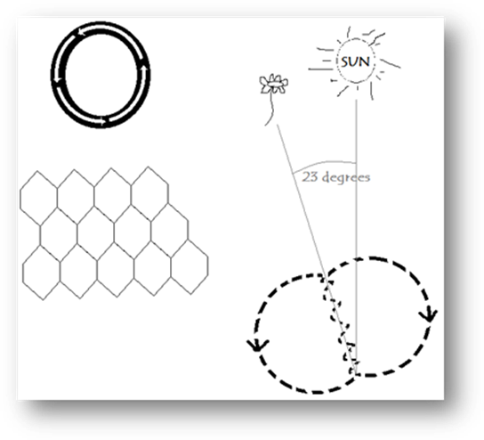

First YearMwaka la Kwanza
Textbook Vitabu vya Kiada
Doctrine 1Mafundisho I
What the Bible Says About Man, Sin, Salvation and AngelsBiblia inasema nini kuhusu Mtu, Dhambi, Wokovu na Malaika
DELIVERANCE BIBLE INSTITUTE of MOSHISWAHILI
Moshi, Kilimanjaro, TanzaniaSWAHILI
DELIVERANCE BIBLE INSTITUTESWAHILI
Portland, Maine, USASWAHILI
Meaning of Doctrine
Dictionary Definition of Doctrine—Ufasisiyo ya mafundisho kamusini (dictionary) –
The principles, beliefs, or dogma of any church, sect, or party. mila, imani, soditio, maneno iliyo aminiwa kwa kila kanisa, dhehebu, ao chama
The Meaning of Doctrine Maana ya mafundisho
The word “doctrine” literally means “teaching” or “instruction” and may be defined as the fundamental truths of the Bible arranged in systematic form . This study is also commonly called theology, which means literally a reasoned discourse about God . Theology or doctrine may be defined as a science which deals with our knowledge of God and His relations with man . Tamko “doctrine” maona yake mafundisho, na tena imeweza kufasiriwa kama kweli ya ndani katika biblia yenye kutungwa katika utaratibu ya mbinu mafunzo hiyi imcitwa kwa ujumba “theology”, maana maarifa kamili kuhusu Mungu. Theology ao doctrine lime weza kufasiriwa kama maarifa kuhusu ufahamu wetu wa Mungu na kwambatana kwake Mungu na mtu.
- Why do we describe theology or doctrine as a “science”? Tumefasiria je theology ao doctrine kama marifa?
Science is the systematic and logical arrangement of certified facts. We describe theology/doctrine as a science because it consists of facts relating to God and Divine things arranged in a systematic and logical order. Maarifa ni utaratibu kamili na yenye kitungwaa mbinyay yene kuhakikishwa, mambo. Tumefasiria theology (doctrine kma maonifa, kwani imeambatana na maneno kuhusu mungu na vitu takatifu vyenye utaratibu kamili na yenye kufwata mbinu.
- What is the connection between theology and religion? Ushiritka gain inayopatikana kati ya theology ne doctrine?
Theology is knowledge of God, but religion is the practice of what is known. (John 13:17; James 1:27) You can be a theologian and not at all religious — i.e., not having any genuine spiritual experience. Theology ni ufahamu kuhusu Mungu, walakini, dini ni mazoezo za hiyo ambayo imefahamika. (John 13:17; james 1:27). Umeweza kuwa mwenye maarifa kamili kuhusu Mungu (theologian), lakini bado haujaambatana na dini-yani, badon haujapata ufahamu kamili za viroho.
- What is the difference between a doctrine and a dogma? Tofauti gain inayopatikana kati ya doctrine na dogma.
Dogma is man's statement of the truth set forth in a creed; while, doctrine is the fundamental truths of the Bible arranged in a systematic form. EXAMPLE: The Roman Catholic Church instructs men to call the pope Holy Father (dogma), whereas the Bible says in Matthew 23:9 “call no man your father”. (doctrine). The very context of Christ's command is addressing the pride and arrogance of men that usurp honor and recognition that is not their own to claim. “Our source is not in man, but is in God” is the principle Christ is emphasizing. The false doctrine that prefaces this particular dogma is that the pope is literally Christ on the earth. Pope Pius X (1903-1914) is quoted in a sermon on the authority of the pope: Dogma ni maneno ya kweli kutokea kwa mtu yenye kudhihirishwa kwa namna ya kusadiki, bali doctrine ni kweli wa ndani katika bibkia wenye kutungwa kwa ambinu. Kwa Mfano: kanisa ya katolika ya Rumi imeagiza watu kumwita pape “Baba Mtakatifu” (dogma), bali biblia imesema katika injili ya Mathayo Mtakaatifu sura yake ishirini na tatu, shairi ya tisa: Msimwite mtu Baba duniani. (doctrine). Maana kamili ya mafundisho ya kristo ni kuhusu kiburi na majivu ya watu ambaye wamepotonya ustahivu na shukrani isiyo kuwa ya kwao kwa kujipendelea wenyewe. Mwanza wetu siyo kwa mtu, bali kwa Mungu kwenye na fundisho ambayo Kristo ametetea. Mafundisho danganifu imetoa hiyo dogma kwamba Pape ndiye Kristo duniani. Pope Pius (ambae ali kuwako toka mwaka 1903 hadi 1914) aliiga kusema katika mafundisho kuhusu mamlakon ya Pope:
The Pope is not simply the representative of Jesus Christ. On the contrary, he is Jesus Christ Himself, under the veil of the flesh, and who by means of a being common to humanity continues His ministry amongst men ... Does the Pope speak? It is Jesus Christ Who is speaking. Does he teach? It is Jesus Christ Who teaches. Does he confer grace or pronounce an anathema? It is Jesus Christ Himself Who is pronouncing the anathema and conferring the grace. Pope siye tu msimamizi wa Yesu Kristu. Lakini, ni Yesu Kristo mwenyewe, Katika mwili na kwa kuwa mtu kama watu ame fuliza kubimiza kazi zake myongoni mwa watu… Pope amesema ? Ndiye Yesu Kristo amenena. Amefundisha ? Ndiye Yesu Kristo amefundisha. Ametoa neema ao laana? Ndiye Yesu Kristo mwenyewe ametoa laana na neema.
The dogma of the Roman Catholic church is based on false doctrine and therefore it is false. Doctrine could be understood as “simply what the Bible says” and dogma is man's conclusions drawn from the text of the Scripture. Dogma can be true, but is not necessarily true. Dogma ya kanisa za katolika ya Rumi umeketi juu ya mafundisho danganifu, na kumbe, imekuwa ya uongo. Mafundisho imesema “na dogma kama neon la mwisho kutokea kwa mtu na yenye kupatikana katika maandikon takatifu. Dogma imeweza kwa kweli, balihaiwezi kwa mara yote kuwa kweli.
The Need for Doctrine Haja ya Mafundisho
Doctrinal knowledge supplies the need for an authoritative and systematic statement of truth. John 17:17 Ufahama ya mafundisho imeleta haja ya neon ya kweli inayo kuwa na mamlaka na mbinu (John 17:17)
Authoritative statements are so important that we may be able to convince the gainsayers (Titus 1:9). Doctrinal knowledge also helps the Believer understand at least three things: 1) Who we are (sinners/saints/loved/judged, etc.), 2) where we came from (dust, image of God, etc.) and 3) where we are headed (heaven, hell, blessings, curses, etc.). Maneno ya mamlaka ni ya muhimu kwa kuwashinda wenye kupinga. (Titus 1:9). Ufahamu wa mafundisho imesaidia tena mwaminifu ili kusudi aelewe mambo matatu: 1) wenye dhambi/watakatifu/wenye kupendwa/ wenye kuhutumiwa, na kadhalika. 2) Mahali ambapo tulitoka (udongo, mfano wa mungu, na Kadhalika na tena. 3) Mahali ambapo tumeongozwa (mbinguni, jehanamu, baraka, laana, matdholita).
Correct doctrinal knowledge is essential to salvation. Ufahamu kamili za mafundisho zimeitojika kwa wokovu
I Timothy 4:16—Take heed unto thyself, and unto the doctrine; continue in them: for in doing this thou shalt both save thyself, and them that hear thee . Timotheo 4: 16—Jitunze nafsi yako, na mafundisho yako: duma katika mambo hayo; maana kwa kufanya hivyo utajiokowa nafsi yako na wale wakusikia pia.
Every experience we enjoy with God is dependent on faith. (Faith is not a shot in the dark, but is securely founded on the WORD OF GOD. Romans 10:17) Paul asks a significant question that establishes our point in verse 14 of Romans 10, “how shall they believe in him of whom they have not heard?” CORRECT doctrinal knowledge is essential, because it is not sufficient to just believe in something , but we must possess that which is TRUTH. God does not respond to hope-so's , or I've been told that… , but God does respond to faith in His Word. Kila ufahamu tunayo ya mungu imetegemea imani (Imani chanzo chake nikusikia, na kusikia huja kwa NENO LA MUNGU. Warumi 10:17). Paulo mtume ameuliza swali moja yenyi maana na yenyi kuhudhuru nukta yetu kwenye shauri 14 ya warumi 10 “Basi wamwiteje yeye wasiyemwamini?”. Ufahamu kamili ya mafundisho imeitajika, kwani haitoshi kuaminia kitu, lakini twapashuwa kuwa na kweli. Mungu hajibu kwa toraja .-hivi, ao walieleza kwamba…, lakini Mungu amejibu kwenye mani kupitia kwa neon lako.
EXAMPLE: Acts 17:22-34. The people of Athens had erected an altar with the inscription “To the Unknown God.” Paul declared on Mars Hill that this Unknown God whom they ignorantly worshipped was the God who made Heaven and earth. The people of Athens had not known SALVATION through ignorant worship, but those that came to the knowledge of Jesus Christ and him crucified and resurrected from the dead did absolutely experience salvation! I Timothy 4:16 infers that the if we do not take heed unto the doctrine than we will be lost. KWA MFANO: Matendo ya mitume 17:22-34. Watu wa athene walijenga madhabahu iliyoandikwa: “Kwa MUNGU ASIYEJULIKANA”. Paulo akasimama katikati ya Areopago, akasema, Enyi Watu wa Athen, katika mambo yote naona ya kuisa minyi ni watu wa athene walipata wokovu kwa njia ya kwabudu bila kunijua, lakini wale waliyoyapata ufahamu ya Yesu Kristo ambaye alisulubiashwa na kufifuta katika wafu hawakuyapate wokovu! I timotheo 4:16 ametetea kwamba ikiwa hautunze mafundisho yote, hatuitunze mafundisho yetu, tutapotea.
Doctrinal knowledge is essential to the full development of Christian character, and contributes to our instruction in righteousness. II Tim. 3:16, 17 Ufahamu wa mafundisho umehitajika kwa kujenga mwenendo ya kikristo, na imesaidia kwa kuelimika Katika haki. II Timotheo 3:16,17.
II Timothy 3:17 —That the man of God may be perfect, … II Timotheo 3:17 – ili mtu wa Mungu awe kamili, …
Perfect, that is, full development . There is progressive development in the spiritual life as there is in the physical life. There are stages of perfection. Is a baby perfect? As a baby, yes! But growth must take place or we would say something is wrong. I Peter 2:2 says, “As newborn babes, desire the sincere milk of the word, that ye may grow thereby :” Kamili, ni maendeleo timilifu. Kuna maendeleo katika maisha ya kiroho vile imekuwa katika maisha ya kimwili. Kuna hatuwa za ukamilifu. Mtoto mchanga ni mtamilifu? Kama motto mchanga, ndiyo! Lakini kukomoa kumefaa kwendelea ao kama sivyo, tumesema kuna shida. I Petro 2:2 amesema, “ Kama vile watoto wachanga wanavyotamani maziwa, nanyi pia mnapaswa kuwa na hamu ya maziwa halisi ya kiroho, ili kwa nguvu yake mpate kukua na kukombolewa.”
It is more important to live right than to know doctrine, but you will not live right without right Christian doctrine. Correctness of opinion is second to correctness of living, but correctness of opinion is a necessity to living right. (Gal. 2:17; Titus 1:16; I Peter 1:22; Eph. 2:5,8-10; Phil. 2:12,13; Heb. 12:14; I Peter 1:16) Niyamulimu kuishi katika haki badala yakuyafahamu mafundisho, walakini hatutaishi katika haki bila mafundisho kweli ya kweli maishani walakini kweli katika kunena yamefaa kwa kuishi katika kweli (Galatia 2:17; Tito 1:16; I Petro 1:22, Waefeso 2:5, 8-10; Wafilip 2:12,13; Waebrania 12:14; I Petro 1:16).
Can you truly love Jesus without knowledge of God's Word? An understanding of doctrine is essential to growth in Christian character. It has been well said that “Christian character is a fruit that grows only on the tree of Christian doctrine.” Correct doctrine is to a Christian what a man's backbone is to his body. He does not wear it on his chest, but without it he would be a hump-backed or jellyfish Christian. A lasting relationship with Christ requires a commitment to truth. We need a strong backbone—Doctrine. Waweza kweli kumpenda Jesu bila ufahamu wa neon la Mungu? Kuelewa mafundisho kumehitajika kabla ya kukomaa katika mwenendo ya kikristo. Ilisemeka vizuri kwamba, “Mwenende ya kikristu ni tuda zimekomaa tu kwenye mafundishio ya kiktristo.” Mafundisho kamili. Haivai kifuwani, walakini, bila hiyo amekuwa mkristu kijongo hama samaki asiye na hali majini. Kuambatana kwa mwisho na kristo kumehitaji utahidikwa kweli. Tumehitaji mfupa wa mgongo wenye nguvu mafundisho.
Jesus is our foremost example and He had Doctrine : Yesus ni mfano wetu kubawa na tena alikuwa na mafundisho:
Matthew 7:28,29—…the people were astonished at his doctrine : 29 For he taught them as one having authority , and not as the scribes. (Mark 1:22; Luke 4:32; John 7:16) Mathayo 7 ;28,29—…Makutano walishangao mno kwa mafundisho yake: 29 kwa maana alikuwa akiwafundisha kama mtu mwenye amri, wala sikama waandishi wao . (Mark 1:22; Luka 4:32; yohana 7:16)
Doctrinal knowledge is a safeguard against error. (Matt. 22:29; Gal. 1:6-9; II Tim. 4:2-4) Ufahamu wa mafundisho imeepusha makosa. (Mathayo 22:29; WAGALATIA: 1:6-9; Timotheo 4: 2-4).
Why is doctrine so important? Sababu gain mafundisho imehitajika?
Ephesians 4:14—That we henceforth be no more children , tossed to and fro , and carried about with every wind of doctrine, by the sleight of men , and cunning craftiness , whereby they lie in wait to deceive ; Waefeso 4:14—Ili tusiwe tena watoto wa changa, tukitupwa huku na huku, na kuchukuliwa na kila upepo wa elimu, kwahila ya watu, kwa ujanja, hikizifuata njiaza udanganyifu.
We need sound doctrine and conviction for those truths. We need to what we believe and why we believe it. An ignorant Christian does not scare the devil. Many people compromise and fall into error because not only do they lack doctrine, but they lack conviction for the truths they do know. Most Christians are filled with preferences instead of convictions towards doctrinal truth. Preferences can be changed with no apparent loss, but convictions cannot be changed without great loss. Tumehitaji mafundisho bora na ukubalisho kwa ajili ya hiyo kweli Tumehitaji kitu tumeaminia na sababu tumeaminaa mkristo mwenye kukosa ufahamu kamwe hamtishi ibilisi. Watu wenge wamehatarika na kuanguk katika makosa, siyo tu sababu ya kukosa mafundisho kamuli, bali wamekosa ukubalisho wa kweli ambayo womejuwa. Uchaguzi umeweza kabaedilishwa bila hosanna lolote inayo onekana, walakini ukubalisho kamwe kwubadilishwi bila hosanna kubwa.
CONVICTION: You SEE it as God's Word, BELIEVE it to be truth, and LIVE by it (and possibly die for it!). UNNEGOTIABLE UKUBALISHO: umeyaona kama neon la Mungu, aminia hiyi kuwa kweli, na ishi katika kweli (na tena ikiwezekona ufe kwa ajali ya hiyo!). HAKUNA USIYA NO LOLOTE.
PREFERENCE: You've HEARD about it, been TOLD or even TAUGHT, but don't believe in the absoluteness and authority of the doctrine. NEGOTIABLE (Only your opinion.) KUTAKA: umeyasikiya, ulielezwa ao hata ulifundishwa, lakini haukwaminie ukubwa na mamlaka ya mafundisho. KUNA USIYANO.
Clear cut beliefs make for clear cut convictions. Kwaminia kwa nazi kuleta Ukubalisho wa wazi??
BEWARE OF FALSE DOCTRINE Fanya Angalisho kwa Mafundisho Danganyifu
I Timothy 4:1—Now the Spirit speaketh expressly, that in the latter times some shall depart from the faith, giving heed to seducing spirits, and doctrines of devils ; 1 Timotheo 4:1 – Basi Roho amena waziwazi, ya kwamba nyakati za mwisho wengine watajitenga na imani, wakisikiliza roho zidanganyazo, na mafundisho ya mashetani,
Always follow the Word. We need to approach every problem with the question, “What saith the Scripture?” (Romans 4:3). If the whole world would unite in an agreement contrary to the Word of God, then the whole world is absolutely wrong! Keep it simple: Stick to the Word. How do we know that which is truth from that which is false? (John 8:31,32) Continue in His Word . Kila siku, uyafwate neon. Tumehitaji Kutaribisha kila shida na swali hiyi “ maana maandiko? Yasemaje? (Warumi 4:3). Ikawa ulimwaungu mzima imeshirikiona kinyume ya neon la Mungu, hivi ulimwengu mzima itakuwa katika makosa! Tia hiyo kichuani: Shikamana katika neon twajuaji ya kuwa ni kweli katika hiyo isiyo kweli? (Yohano 8:31,32) dumu katika neon.
Because of the ugly fact that not all preaching is truth (Matthew 16:12), every Christian must thoroughly involve themselves with the Word of God. Truth is greatly needed! (Colossians 2:8; Hebrews 13:9) There is a need to study the Word of God. Ni kwa ajili ya mamba mabaya, maubiri yote umekosa kweli (mathayo 16:12), Kila mkristo amestahili kushikama mzima katika neon la Mungu. Kweli imehitajika sana! (wacolosai 2:8; waebrania 13;9) imetupasa kujifunza neon la Mungu.
2 Timothy 2:15—Study to shew thyself approved unto God, a workman that needeth not to be ashamed, rightly dividing the word of truth . 2 Timotheo 2:15 – Jitahidi Kujionyesha kuwa umekuboliwa na Mungu, mtenda kazi asiye na sababu ya kutahayari, ukikumia kwa halali neon la kweli.
The Bible student must be earnest, diligent, and careful. In our study of the Word of God, we compare Scripture with Scripture for no prophecy of the Scripture is of private interpretation (2 Peter 1:20). So much error happens because men grab a Scripture out of context and just run with it. Interpret Scripture by Scripture. Imewaposa wanafunzi wa biblia kuwa wenye saburi, busara na ujosiri. Kwa mafunzo ztu za neon la Mungu tumelinganisha maandiko na maandiko, kwani hakuna unabii katika maandiko upatao kufasiriwa kama apendovyo mtu Fulani tu (2 petro 1:20). Makosa mengi zimetukia, kwani watu wamechukuwa maandiko wame fasiriya hivyo na womepiga mbio moyo. Wame fasiriya maandiko kwa maandiko.
EXAMPLE: What does being “born-again ” mean in John 3:3? Is Jesus meaning to enter the mother's womb a second time? No. The answer is not No just because of logic or reasoning, but because Jesus Himself qualifies the term in verses 6-8—born of water and of the Spirit…. See also: John 1:13; James 1:18; I Peter 1:23; Eph. 4:26. Kwa MFANO: kuzaliwa upya maana yake nini katika injili ya yohana Mtume 3:3? Bwana Yesu ona nia za kusema: rudi humboni ya mama yakon mona ya pili? Siyo. Jibu siyo: Siyo sababu ya mwenyene ameifasiriya viziri katika shairi ya 6-8- Kuzaliwa kwa maji na kwa roho… Angalia tena katika Johana 1:13; Yakobo 1:18; I Petro 1:23.
In our study and search for truth it is imperative to remind ourselves to be wise unto that which is good, and simple concerning evil (Romans 6:19). We do not need a complete knowledge of the wrong, but we do need a complete understanding of that which is right. Katika njia yetu ya kijifunza na kutafuta kweli imetupaso kujikumbusha wenyewe kuwa na hekima ya katika yoyote yiliyo njema na mwepesi kuhusu mabaya (warumi 6:19). Hatutaki kuwa na ufahamu tele ya mabaya, bali tumehipati kuelewa tele yoyote yliyo njema.
Doctrinal knowledge comes in obedience to the will of God. Ufahamu ya mafundisho umetoka kwa utie wa neon la mungu.
John 7:17—If any man will do his will, he shall know of the doctrine, whether it be of God, or whether I speak of myself. Johana 7:17—Ikawa mtu yeyote ameshika mapenzi yake, yule atapata ufahamu katika mafundisho ya kuwa ni ya Mungu hama nimesema kuhusu mwenyewe.
We need to test the Word of God. Put God to the test and see if He will not be faithful. David said, “O taste and see that the Lord is good .” (Psalm 34:8) As we walk in the will of God we will experience and witness the truth and reality of the words Christ spoke. God does not just command us to believe an unopened book, but he opens the pages of Scripture to our understanding and invites us to experience every word. It is in this experience that a deeper knowledge of doctrine comes. Until then, all we have is hear-say . Imetupasa kuijaribu neon la Mungu. Kumjaribu Mungu ili kuona kama atakuwa mwaminifu Mfalme Daude alisema : “O jaribu ili kuona kama Mfalme ni mwema” (Zaburi 34:8). Maadomu tumetembea katika mapenzi ya bwana, tutapokea na kushudia kweli na ukweli ya maneno bwana yesi alishuudia. Mungu akutuamuru kusadikia kitabu kilicho wazi, bali ame fungua ukurasa wamaandiko kwa uelebu wetu na kutualika kuishi katika kila neon. Ni katika kuishi katika hiyi tumepata ufahamu wa mafundisho wa ndom.
The Classification of DoctrineHaina ya Mafundisho.
There are almost an infinite number of ways to classify doctrine. The list given is not exhaustive but are mere examples of how we can organize Biblical doctrines.
Exegetical Theology — Explanatory, exposition, hermeneutics, drawing out the truth, seeks to know the true meaning of Scripture, and requires a knowledge of the original languages. Exegestical Theology — Kupata kweli, imetafutisha kufahamu maana ya mandiko, na tena imetoza ufahamu wa marihuga halisi.
Historical Theology —Involves the study of Church History and traces the development of doctrinal interpretation. Historical Theology — Imeambatana na mafunze ya hadithi yak anis na tena imetoa maendeleo ya ufasiriyo wa mafundisho
Dogmatic Theology —The study of the fundamentals of the faith as set forth in church creeds. Dogmatic Theology — Mafunzo ya mila za imomi kama vile imeonyeshwa katika masadikio ya kamba
Biblical Theology —Traces the progress of truth through the books of the Bible. Biblical Theology — Imetoa maendeleo ya “kweli kwa njia ya vitabu vya biblia.
Systematic Theology —Biblical truth arranged in topics according to a definite system. Systematic Theology — Ukweli wa biblia wenye kutungwa katika manukta kutokana na fioni.
Below is an example of Systematic Theology that we use in our Doctrine textbooks.
A System of DoctrineMbino ya mafundisho
Anthropology —The Doctrine of Man Anthropology — Mafundisho Kuhusu Mtu
Genesis 1:26,27; Job 4:17; 33:4; Psalm 8:5; 31:5; 139:14; Mark 10:6 Mwanzo 1:26-27; Yobo 4:17;33:4; Zaburi 8:5;31:5;139:14; Marko 10:6
Harmartiology —The Doctrine of Sin Harmartiology — Mafundisho Kuhusu Dhambi Kumbu Kumbuz
Deuteronomy 29:19; Isaiah 1:18; Matthew 12:31; Romans 3:23; James 1:14,15 Torati 29:19; Isaya 1:18; Mathayo 12:31; warumi 3:23, yakobo 1:14,15
Soteriology —The Doctrine of Salvation C. Soteriology — Mafundisho Kuhusu Wokovu
Numbers 21:2-9 (John 3:14,15); Psalm 18:2; John 6:37; Romans 1:16; Ephesians 2:8 Hesabu 21: 2-9 (Jahana 3:14,15); Zaburi 18:2; yahana 6:37 warumi 1:16; waefeso 2:8
Bibliology —The Doctrine of the Scriptures Bibliology — Mafundisho Kuhusu Maandiko
Exodus 17:14; Jeremiah 30:2; John 7:32; II Timothy 3:16; Revelation 1:11 Kutoka 17:14; yeremia 30:2; yahana 7:34; II Timotheo 3:16; Ufunuo 1:11
Theology —The Doctrine of God Theology — Mafundisho Kuhusu Mungu
Genesis 1:1; Deuteronomy 6:4; Psalm 135:5; John 1:1; Ephesians 4:5 Mwanzo 1:1; Kumbu kumbu za torati 6:4; Zaburi 135:5; yohana 1:1; Wuefeso 4:5
Angelology —The Doctrine of Angels Angelogy — Mafundisho Kuhusu Wamalaika
Isaiah 6:2; Matthew 1:20,24; I Thessalonians 4:16; Jude 9; Revelation 12:7 Isaya 6:2; Mathayo 1:20,24; I watheslonikia 4:16; Yuda 9; Ufunuo 12:7
Christology —The Doctrine of Christ Christology — Mafundisho Kuhusu Kristo
Matthew 16:16 ; 19:3-12; Mark 1:21-28; Luke 2:1-7; John 2:1-12; 6:1-5; Hebrews 13:8 Mathayo 16:16; 19:3-12; Marko 1:21-28; Luka 2:1-7; Yohana 2:1-12; 6:1-5; Waebrania 13:8
Expiatology —The Doctrine of Atonement Expiatology — Mafundisho kuhusu Utuhio
Exodus 12:21; Leviticus 4:5,6,17; 17:11;Matthew 20:28; Hebrews 9:6-22 -28; 11:28 Kutoka 12:21; Walawi :.5,6,17; 17:11; Mathayo 20-28; Waebrania 9:6-22-28;11:28.
Pneumatology —The Doctrine of the Holy Spirit Pneumatology — Mafundisho kuhusu Rohomtakakifu
I Thessalonians 1:5; John 14:16; 16:13; Acts 1:8; 2:1-4; Romans 5:5; 8:16 I Wathesalonika 1:5; Yohana 14:16;16:13; Matendo ya Mitume 1:8; 2:1-4; Warumi 5:5;8:16
Ecclesiology —The Doctrine of the Church Ecclesiology -Mafundisho kuhusu Kanisa
Matthew 16:18; Eph 1:22,23; Col 1:24; Hebrews 12:23; Revelation 1:20 Mathayo 16:18; waefeso 1:22-23; wakolosori 1:24; waebrania 12:23; Ufunuo 1:20
Eschatology —The Doctrine of Last Things Eschatology - Mafundisho kuhusu Mambo ya Mwisho
Isaiah 2:2; Daniel 12:9; Micah 4:1; Matthew 24; Acts 2:17; 2 Timothy 3:1; 2 Peter 3:3 Isaya 2:2; Danieli 12:9; Mika 4:1; Mathayo 24; Matendo 2:17; 2 Timotheo 3:1; 2 Petro 3:3.
The Doctrine of Man Mafundisho kuhusu Mtu
Anthropology: The Creation of ManAnthropology: Kuumbwa kwa Mtu
Special Creation “after his kind” Gen. 1:25Umbo wa tofauti “kwa mfano wake” Mwanzo 1:25
The term special creation refers to the doctrine that all living organisms were created according definite ‘species' and that these species will produce after their kind. This principle defies the evolutionary hypothesis that each species is an evolved form of some earlier species. Biblically put, special creation means that all living organisms will produce after his kind . A very simple example of this principle is that when you plant an orange seed, it is most definite that an orange tree will develop and not any other kind of plant (i.e. apples, watermelons, cucumber, etc.). Tamko “umbo wa tofauti” imeambatana na mafundisho ya kwamba viumbe vyote vyenye uhai viliumbya kutokana na ma haina Fulani na kwamba hiyo ma haina Fulani ina hali yenye mwendeleo ya ma haina ambayo ili kuako tangu awali. Kutokana na biblia, umbo wa tofauti (upekee) maana viumbe vyote vyenye uhai vitatoa uzao kwa mfano wake. Mfano mwepesi ya hiyo kamuni ni kwamba wakati umepanda punje za njimu, (mekuwa wazi kwamba mti wa njimu zita komaa kusi haina yake tu (kwa mbfano: apples, water melons, cucumber, na kadhalika) (Ndizi, hembe, mapela, muzeituni, na kadhalika).
The Image of God Mfano Ufamruisho wa Mungu
Genesis 1:26 says man was created in the image of God. To what does this “image” and “likeness” refer?Mwanzo 1:26 imesema kwamba aliumbwa kwa mfano wake Mungu. Ufananisho na mfano hii imeambatana na nini?
There maybe reference here to physical likeness. There are some who believe that such scriptures as Psalm 17:15 teach that God has a visible form and that man in the garden bore that image. See also Isaiah 6:1 and Acts 7:55,56.Kumekuwa ambatano na ujananisho wa murlikuna wengine wamedhani kwamba hiyo maandiko, kama Zaburi 17:15 zimefundisha kwamba ana hali yenye kuonekana, hivyo mtu kwenye bustani alichukua kwa mfano wake. Angalia tena katika Isaya 6:1 na Matendo 7:55,56.
However, we must be careful to remember that while God is capable of assuming human form, the essence of His being is Spirit. (John 4:24) Basi, afadhali ma tufanye angalisho ili kukumbuka kwamba Mungu ana uwezon ya kuivaa hali ya mtu. Undani wa hali yake ni Roho. (Yohana 4:24)
It has reference particularly to a moral and intellectual likeness. The following passages speak of the “image” of God in respect to knowledge and righteousness. (Ephesians 4:23; Colossians 3:10; 2 Corinthians 3:18)Imeambatana na ufananisho wa mwendo wa elimu. Maandiko ijayo imesungumzia “mfano” wa mungu kuhusu ufahamu na uhaki. (Wrefeso 4:23; Wakolosai 3:10; 2 Wakorinto 3:18)
Evolution versus Special CreationMaendeleo kufika kwenye umbo za tofauti (upekee)
Opposed to special creation is the theory of evolution, which teaches that all forms of life developed from one form and that higher species, developed from a lower. So that, for example, what was once a snail became a fish; what was once a fish became a reptile; what was once a reptile became a bird, and what was once an ape became a human being.Kinyume za umbo za tofauti ni mafundisho za maendeleo, ambayo imefundisha halizote za maisha yenye kupata maendeleo tangu hali moja na hiyo na haina ya hali za juu zaidi, yenye kupata maendeleo kutoka kwa ma traina za chini zoudi. Ili kusudi, kwa mfano, ile iliyo kuwa gorogoro ili kwa samaki; ile iliyokuwa samaki, ilikuwa wanyama wenye kutamboa; ile iliyokuwa wanyama wenye kutamboa ilikuwa ndege, ne ile iliyokuwa apepe ili kuwa mtu.
What is a species? Haini ni nini?
A class of plants or animals which have characteristic properties in common and can be indefinitely propagated without changing those characteristics. Haina za mapando na wanyama wenye kuwa na ufanonisho umoja na wamezorabila mwisho mahali pote bila mabadiliko lolote za haina.
What is a test by which the distinction of species is known? Ni kwa mashindno gain tofauti ya haina ime julikana?
If living organisms can be paired together and so propagate indefinitely a fertile offspring, they are of the same species. Ikuwa viumbe vyenye uhai vimeweza kumbatana pamoja na hivi bila mwisho uzao wenye kuwa najiusi ya kuzao; vinatawanyisha kumbe vimekuwa vya haina moja.
Is evolution a scientifically proven fact? No, it is a theory .Maendelon zimehakikishwa ni mambo kwenye kuakikishwa katika manifa? Siyo (Hamma), ni mafundisho.
Reasons there is a God and Evolution is a LieD. Sababu ya kuwako kwa Mungu na Mwendeleo ni Uongo
THE CREATION OF THE UNIVERSE KUUMBWA KWA ULIMWENGU
A plan without a planner? How would there be nothing and then suddenly something? The existence, beauty, immensity and order of our universe is evidence enough of a Designer at work and not mere coincidence.Mpango bila mwenye kupanga? Vipi kulikuwako tupu na kiisha mara kumetuwako kitu? Kuwa, urembo, upana na utaratibu wa ulimwengu wetu ni akikisho yenye kutosha ya mwenye kuumba mwenye kuwa kwa kazi na siyo ubahatisho.
SUN — 10% closer earth would sizzle or if the sun was 10% farther away the earth would freeze. The sun is so big that it could contain 1,300,000 earths.JUWA—10% Karibu, udingo unge sugulika ikawa juwa ilikuwa 10% Mbali ya udongo unge kuwa kama barafu. Juwa umekuwa kubwa zaidi hata kuwa 1.300.000 mara ya udongo
MOON — If it was any closer, huge tidal waves would engulf us.MWEZI—Ikawa ilikuwa karibu, mawimbi yenye ukubwa zaidi ingetumeza.
AIR — Just the right amount of oxygen is present in the air so that if any was added or taken away, life could not exist on earth. AIR – hewa kamili za pumzi zimkuwamo katika hewa ili kusudi kamazingine ziméongeka ao kupungugwa maisha inge shindikana udongoni.
STARS — Our solar system with its sun, and planets, the Milky Way, is composed of 100 billion stars each with their own planet system. The universe is considered to be infinitely expanding.NYOTA –Ulimwengu wetu wa jua na jua yake, na ma udongo mbali mbali, imekuwa na billioni miya mojo ya nyota, na kila mmoja na ulimwengu yake ya udongo. Kumbe ulimwengu imejulika kuongezeka bila mwisho.
EARTH — Job 12:8 “Speak to the earth, and it shall teach thee.” The earth is spinning in four directions at least all at once.UDONGO— Yobo 12:8 “Sungunza na udongo, na itakufundishwa”. Udondo imezunguka katika njia nne kwa mara moja ao zaidi yake.
THE WORLD OF NATUREMwituni
THE ROSE — Color — scent, all packed into a tiny seed never gets mixed up.Uwa— Rangi— harufu; yote katika punje ndogo bila kamwe kuchangamana.
THE RADISH — Black seed — Green leaves — Red coat — White meat.The RADISH— Punje nyeusi—Majani ya kijivu—jivu—ngozi nyekundu—Munyofu nyeupe.
THE WATERMELON — seed reproduces itself 1 million times.THE WATERMELON— punje zimezaa pekeyke mara milioni moja.
THE ACORN — Oak tree — The Poet said, “Only God could make a Tree.”THE ACORN— Mti wa Oak—Mtunga shairi alisema “Mungu tu ndiye mwenye kuumba mti”
OUR HUMAN BODYMWILI WETU WA UTU
The human body is incredibly complex and amazing. It begins with the union of two cells and it takes upon itself some 21 trillion other cells (all going to the right places).Mwili wa utu ni bila shaka ngumu na yenye kuleta mshangao. Imeanza na ambatano wa mbego mbili na imechukua binafsi trilioni ishirini na moja ya mbego nyingine (yote umeeda mahali kamili).
THE HEART — weighs almost 3 lbs. and pumps enough pressure to lift a battleship or push 100 freight cars down a track.ROHO—Ina uzito wa 3lbs., na imetoa mkazo yenye kutosha ili kusudi kunyanyua merikebu mojaza vita ao kusukuma ma gari miya moja yenye shehena kuteremka kwenye barabara.
THE BRAIN — greatest computer —Much of our brain's potential goes unused. BONGO—Kombpyuta yenye ukubwa mno— shehemu kubwa yenye kazi katika bongo letu alipate matumizi.
THE EAR — sound scale — There are sounds in the air that we do not hear, and yet the ear has within it the potential to hear all sounds.MASIKIYO— Kipimo cha sauli— kuna masauti hewani ambayo hatusikie, na japo sikiyo ina ndomi mwake uwezo wa kusikia sauti zote.
Example — A dog will react to a whistle that we cannot hear.Kwa mfano— Mbwa atajibu kwa pyororo ambayo hatuzi kusikia.
THE EYE — Transmits sight to the brain which changes the images right side up.JICHO—imetoa ono Kyenye bongo ili kusudi iyabadili mapicha kusimama sawa.
THE BLOOD — Vessels like an incredibly complex city. Blood cells detect harm and fight off the enemyDNU—Kitu kigumu kwa kuelewa. Masehemu za damu zimefumbua ubaya na kuponbansha adui.
THE NERVES—There are over one billion nerves (main stems, branches and endings) in the human body all managed by one brain.MISHIPA NDOGO— Kuna mishipa ndogo zaidi ya bili moja (Mishipa kubwa, viugo na mwisho yao) Katika mwili wa mtu yote yenye kuongozwa na bongo moja.
THE CREATION OF LIFEUMBO LA MAIFA
How did life begin? Some say a product of evolution. Evolutionists seek to link man with brute beasts, but Jesus Christ came into the world to link man with God. John 1:12; Ephesians 2:15; II Peter 1:4; I John 3:2 Vipi maisha ilianza? Wengi wameshuudia kwamba ni tuda za maendeleo. Wenye kutelea maendeleo wametafuta kuambatanisha mtu na wanyama, walakini Yesu alikuja duniani ili kuambatanisha mtu na Mungu. (Yohana 1:12; Waefeso 2:15; II Petro 1:4; I Yohana 3:2)
Life did not come by human nature evolving into the Divine, but by the Divine entering into human nature.Maisha haitoki kwa maumbile ya uutu yenye kuambatana na umungu, bali imetoka kua ya Umungu yenye kunigizana katika uutu.
THE THEORIES OF EVOLUTIONMAFUNDISHO YA MAENDELEO
There are so many gaps and so much supposition in evolution that it cannot be classified as a true science. The gaps in evolution have become known as the ‘missing links.' It is made up of exaggerated speculation and theories and not ‘observable facts.' As a matter of fact, Evolution requires so much blind faith of its followers that it is more accurate to describe it as a religion. In the United States, it has become the religion of the State under the guise of “Separation of Church and State.”Kun swali mengi ambayo imekosa jibu na udhani wengi kuhusu maendeleo ambayo haiwezi kuxhukuliwa kama maarifa halisi. Hiyo ma swali mbali mbali bila jibu imejulikana kama maungano yenye kutoweka. Ime kua fikira yenye kuzidi mno na mafundisho, lakini siyo mambo ambayo imeonekana kwa macho. Kueli, Maendeleo imeomba imani kubwa yenye kuwa bila macho kutokea kwa wafwashi wake ye kwamba imekuwa kuitaja kama dini. Kwenyi USA, imeduwa dini za serkali chini ya uficho ya “matengano kati ya kanisa na serkali”
Let's take a look at some of the Darwinian ‘scientific method' at work! Consider if you could recognize any of your deceased relatives if you were give as scant evidence as we see below. THE MISSING LINKS:Tutazame kwanza matendo ya badhi ya mbinu ya maarifa kama bile bwana Darwin alitumia! Tafakari kama umeweza kuwafahamu wazazi wako fuluni ambaye wamekuisha katoweka kama ulipewa hakikisho ndoyo kama hivyo tumeyaona katika mafundisho ifwatayo. MAUNGANO YENYE KUTOWEKA.:
Hesperopithecus — Harold Cocki — Nebraska Man — This model was constructed from one tooth that was discovered which eventually proved to be from a pig.Hesperopitheous — Harold Cocki— Mtu wa Nebroska— Hiyi mfano ili undwa kutokea kwa jino moja amboyo ili fumbuliwa na kuhakikisha kutokea kwenye nguruwe.
Homo neanderthalensis — Neanderthal Man — Germany — Constructed from part of a skull, thighbone, one rib fragment . Scientists could not agree on the findings if they were even from the same body.Homo neanderthalensis — Mtu wa Neanderthal— Katika nshi Germany— aliundwa kutokea kwa sehemu ya mfupa wa kichwa mfupa wa paya, na sehemu moja ya ubavu. Watu wenye elimu hawakuweze kukubali hiyo amboyo ili fumbuliwa ingawa walikuwa kwa mwili moja.
Pithecanthropus erectus — “The ape man who walked erect” Known as the Java Man — The entire model was constructed from only a piece of skull, two teeth, and one thighbone. 10 scientists said they were the bones of an ape; 7 said they were the bones of a man. 7 others said they were a “missing link” in the chain of evolution!Pitheconthropus erectus — “Mtu……ape? Alikuwa ametembea myenye kusimama”. Mwenye kujulikana kama mpu wa JAVA— Hiyo mfano mzima iliundwa kutokea kwa sehemu moja ya mfupa wa kichwa, meno mbili na mfupa moja wa paya. Watu kumu wenye elimu walisema ilikuwa mufupa za …..? an ape; saba walisema ilikuwa mifupa ya mtu. Saba wengine walisema ilikuwa ungano yenye ku toweka “katika mnyororo za maendeleo!
Eoathropus dawsoni — Piltdown Man — From one piece of jaw, one piece of skull, one canine tooth, two molar teeth, and one nasal bone. Applying the chemical dying process proved the jawbone does not belong to this skull at all.Eothropus Dawsoni — Mtu wa altdown— Kutokea kwa sehemu kimoja cha mfupa wa kinwa, sepremu kimoja cha mfupa wa kichwa, jino moja ya mbele, meno mbili ya mwisho, na mfupa moja wa pua. Wakati ili hunzwa kar njinya laboratory ilionyesha kwamba hiyi mfupa wa kinwa haikumbatane vizuri na mfupa wa kichwa.
Homo erectus — Heidelberg Man — Again, an entire diagram of a complex creature of hundreds of moving parts totally reconstructed from the exhaustive resource of one jawbone found in the sands of Germany.Homo erectus — Mtu wa Heidelberg— Tena picha mzima ya umbo ngumu ya miya ya sehemu yenye kutikisika na kuundwa kutokea kwa tabu ya kupata mfupa wa kinwa ambayo ilipatikana kwenye mchanga wanchi Germany.
Anthropology: The Original Condition of Man Anthropology: Hali ya Mtu Yenye kuwa ya Mwanzo
Man was created a perfect being. Mtu mliumbwa mkamilifu.
The record of Scripture plainly describes that man was not created a simple cell that evolved or any other such theory, but was created perfectly complete and mature. There were no flaws in God's design. Kitabu cha maandiko kimeonyesha waza kwamba akuumbwa koma mwili ndogotu ambayo ziliendelea ao mafundisho ile lolote, walakini aliumbwa kwa ukamilifu wanye kutesha hamma kosa lolote mwenye mpango la Mungu.
Man was created a free moral agent. Mtu aliumbwa mwenye Uhuru ya uchaguzi Dhambi kwenye bustani ilikuwa mapenzi ya mtu.
The sin in the garden was volitional on the part of man. It was completely voluntary for they had the freedom of choice. Ilikuwa kweli kwa kutaka, kwani walikuwa na uhuru za uchaguzi.
Man was created with an inherent religious instinct, which made him conscious of moral responsibility to God, and capable of communion with God. Mtu aliumbwa na fikira za kutafakari mamba za dini, ambayo ilimifanya kuwa na ufahamu wake wa wajibu ya kiroho mbele ya Mungu, na Kufanya ushirika na Mungu.
Original man was created sinless (Genesis 1:31) and innocent of evil. (Genesis 2:17; 3:5-7) Mtu wa mwanzo aliumbwa bila dhambi (mwanzo 1:31) na bila hatia za ubaya (mwanzo 2:17; 3-5-7).
Genesis 1:31: Mwanzo 1:31:
· very – mead (Hebrew) superlative; exceeding; very Very-mead (Kiebrania) Kuzidi Mwenye, very
· good – towb (Hebrew) good; best; beautiful Good-towb (Kiebrania) Mwema, mwenye uzuri, mrembo.
The original man was endued with lofty intellectual faculties. Genesis 2:19, 20; Hebrews 2:6-9 Mtu wa mwanzo alipewa elimu kubwa. Mwanzo 2:14,20; Waebrania 2:6-9.
Man was created with enough intellectual capacity to give names to all living creatures, and to have dominion over them. The modern theories of evolution, which try to explain the development of man from a lower order of beings, are monstrous products of unbridled imaginations. Mtu aliumbwa na elimu yenye kutosha ili kuleta jina kwa biumbe vyote vyenye uhai na kuvitawala. Mafundisho mpya ya maendeleo, ambayo imejaribu kufasiria maendeleo ya mtu tangu hali ya chini ya utu ni tunda mbovu za fikira isiyo na msimamo.
Genesis 3:7 does not suggest that Adam and Eve were created intellectually ignorant. The fact they could be naked and not know it would seem to suggest a lack of intelligence. The answer to this puzzle is that they were created in innocence and not ignorance . It is hard for us to comprehend a world full of innocence and void of evil. But this is exactly the atmosphere of Eden that Adam and Eve enjoyed. There were no impure thoughts or motives, no sewer-thinking , or any such thing. Until the fall there was no precedent for sin . They enjoyed the glory and beauty of the purity of God in a pristine form—untouched by the filth of sin. Mwanzo 3:7 harifundishe kwamba Adamu na Eva waliumbwa bila elimu lolote. Jambo kuhusu hali ya uchi na kutokuyajua imeonekana kufundisha ukosefu wa elimu Jibu kwa muthili hiyi ni kwamba waliumbwa katika kutokuwa na hatia, bali siyo katika kutokujua. Nikigumu kwetu kwelewa ulimwengu bila hatia na bila ubaya. Walakini ndiyo hiyo hahi kamili ya bustani ya Edeni ambapa Adamu na Eva walikuepo . Hakuwe fikira mbaya wala chanzo yake, hakuwe njia ya fikira mbovu wala mambo kama haya. Hadi kwanguka hakukuepo hadi miza dhambi. Walikuwa na utukufu na uzuru wa utakaso wa Mungu yenye hali ya….? Pristine – yenye kupepukana na uchafu wa dhambi.
The Doctrine of Sin Mafundisho Kuhusun Dhambi
Harmartiology Harmartiology
We title the study of the Doctrine of sin as Harmartiology. The root word harmartia is a Greek word for sin; it comes from a word that literally means to miss the mark and not share in the prize . The suffix ology identifies a 'science . It is called a science because it consists of systematically and logically arranged facts."Tumetoa nukta za mafundisho kuhusu dhambi kama harmartiology ya mzizi tamko- harmartia ni tamko za kiyunani yenye mana dhambi. Imetoka kwenye tamko yenye maana kamili ya kutokufika kwenye mwisho ili kusudi kuipata tuzo. Tamko za mwisho- ology maana: maarifa. Imeitwa maanifo, sababu imeundwa kwa jinsi ya mbinu na usahihi. "
The Scene of the Fall Jambo Kuhusu Kuanguka
A. The Tree of Knowledge of Good and EvilA. Mti wa ufahamu wa mazuri na mabaya.
In the midst of the garden was placed two trees of destiny. The first was a tree of life, but the second was the forbidden tree of knowledge of good and evil. Why did God place such a horrid tree in the midst of Eden's blissful paradise? It was a test for man."Katikati ya bustani kukikuepo miti mbili ya lengo ya maisha. Ya kwanza ilikuwa mti ya maisha, bali ya pili ilikuwa mti yenye kukatazwa, yani ya ufahamu ya muzuri na mabaya. Sababu gani Mungu aliyatia hiyo mti mbovu katikati paradiso yenye raha ya Edeni? "
B. The TempterB. Mjaribu .
In his temptation of the Crown of God's Creation , satan employed the agent of a serpent. The outstanding characteristic of this serpent was that it wasmore subtil than any beast of the field which the LORD God had made . The serpent, satan, was that eternally damned and rebellious angel of God. Why would he be allowed to put one foot into the garden, or be allowed to operate in that blessed place? It was a test for man."Katika kujaribu kwake umbo la tajila Mungu, shetani alitumiya mbfano wa nyoka. Tabia yake ya upekee huyu nyoka ilikuwa ujanja zaidi kuliko nyama lolote za mwituni (shambani) ambayo mfalme Mungu aliumba. Nyoka, shetani, alikuwa malaika mwenye kulainiwa na mwenye kuinukia Mungu. Sababu gani yule aliruhusiwi kuingizana dani ya bustani? Hama sababu gani aliruhusiwi Kutenda katika mahali hiyi yenye kubarikiwa? Ilikuwa kwa kumpima Mtu. "
C. The TestC. Jambo kuhusu kupima
The preceding answer leads us to one ultimate question of purpose—Why was it necessary for man to be tested?Jibu hiyi imetujuzu kufika kwenye swali ya mwisho ambayo ni mpango- sababu gani ilokuwa ya muhimu kumpima mtu?
First, God's desire is to fellowship with a people that chooses to love Him. He is not content to have the admiration of mindless robots. Second, in order for there to be a choice there must be at least two options or there is really no choosing. Therefore, the Tree of Knowledge was placed in the garden to test man's devotion to God. "Ya kwanza, mapenzi la Mungu ni urafiki na watu ambaye wamechagua kumpenda. Haitaji mtu na uwamuzi wa vitu ambayo havina mafikiri lolote (robote). Ya pili, ili kusudi “uchaguzi” ukuepo, kumepashwa kuwa uchaguzi mbili, na kama sivyo, akuna “uchaguzi lolote”. Kumbe, mti wa ufahamu ilikuepo kwenye bustani ili kusudi kuupima uambatano wa mtu na Mungu."
Let us consider two other relevant questions: Kumbe wache tushururikie swali hiyi mbili kamili:
1) Did man's failure reflect at all on God? No. God is infallible. God created and designed man, but He also gave man the freedom of choice. Man's fall does not expose some flaw in God's design, but emphasizes the wonderfulness of God's design. God designed it so that man could choose God, but he also had the liberty to not choose God and His ways. "1) Udhaifu wa Mtu ulitoka kwa Mungu? Hamna . Mungu hana udhaifu na kamwe haanguki. Mungu aliumba na kumfanya mtu, walakini alimpatia tena uhuru katika uchaguzi. Kuanguka kwake mtu haionyesho ubovu wa mpango wa Mungu, walakini imedhihirisha ukubwa wa mpango huwu. Mungu aliipanga hivyo ili kusudi mtu amchague Mungu, walakini alikuwa tena na uhuru ya kutokumuchagua Mungu na manjia yake. "
2) Did Adam HAVE to sin? No. If Adam HAD to sin, there would still have existed no true choice for Adam simply would have had no choice but to sin. With every test from God comes also the grace to overcome! We can pass the test by the grace of God. There existed for Adam and still exists for us the potential of not falling. "2) Adamu alipashwa kutenda dhambi? Hamna. Ikaua Adamu alipashwa kuyatenda, hakungi kuwa “uchaguzi” halisi, kuani Adamu hange kuwa na “uchaguzi” lakini dhambi katika majaribu kutekea kwa Mungu, kumetoka tena neema za kushinda! Tumeweza kuyashinda kwa ajili ya neema yake Mungu. Kulikuepo na tena kumekuwa uwezo wa kushinda. "
Jude 1:24—Now unto him that is able to keep you from falling, and to present you faultless before the presence of his glory with exceeding joy, "Yuda 1:24—Yeye awezaye kuwalinda nyinyi msijikwae, na kuwasimamisha mbele ya utukufu wake bila mawaa katika furaha kuu.
The Fact of the Fall Mambo kuhusu Kuanguka
The most tragic event connected with man is his fall into sin. Genesis 3:1-6 reveals that the first man fell. The steps in the fall were:"Shida kuu ambayo iligandamana na mtu, ni kuanguka kwake katika dhambi. Mwanzo 3:1-6 imeonyecha kwamba mtu wa kwanza alianguka. Atua ya kuanguka ilikuwa hiyi. "
A. Listening to slanders about God. vs. 1Kusikiliza makufuru kuhusu Mungu. (3:1)
Hath God said ? Shauri ya Kwanza: Mungu alisema ?
B. Doubting God's Word and His love. vs. 4,5"Kushakia neno la Mungu na mapendo yake. (3:4,5) "
“God is keeping something wonderful from you!”“Mungu amekuficha kitu kyenye zuada kuu!”
C. Looking at what God has forbidden.Kutazama kitu Mungu alikataza.
And when the woman saw the tree v. 6 (Compare with Joshua 7:21.)Na wakati muke aliyaona mti (3:6) (linganisha na Yoshua 7:21).
Note the steps of sin:Uyakumbuke atua ya dhambi:
“I saw”“Niliona”
“I coveted”“Nilitamani”
“I took”“Nilichukua”
“I hid”“Nilijificha”
D. Lusting for what God has prohibited. v.6D. Tamaa za Kitu Mungu alikataza. (3:6)
Here we have the “Lust of the flesh”, “Lust of the eyes” and the “Pride of life” spoken of in 1 John 2:16. (Compare with Luke 4:1-15.)"Hapa tuna “tamaa za mwili”, “tamaa za macho” na “mafirino za maisha” yenye kuzungumziwa katika I Yohana 2:16. (Linganisha na luka 4:1-15) "
III.The Results of the Fall Matokeo ya Kunvuguka
A. Upon Man's Physical NatureA. (Juu ya ) mahali pa maisha ya mtu
1. The ground was cursed, so that henceforth it would not yield good alone. Gen. 3:17"1. Udongo ililainiwa, na haiweze kutoa tunda yenyewe. (Mwanzo 3:17) "
“How often are all the fruits of man's toll destroyed by blasting, by mildew, by insects, wet weather, land floods, etc.! Anxiety and carefulness are the labouring man's portion.”—Adam Clarke"“Maur ngapi matunda kutokea kwa tabu za mtu ziliharibika na maadudu, na umajimaji, na wakati mbovu, nakadhalika! Sikitiko na angalisho imeambatana na kazi yake mtu.”—Adam Clarke "
2. Multiplied sorrow and pain to the woman in childbearing and labor, and subjection of the woman to her husband. Genesis 3:16"2. Sikitiko na uchungu yenye kuongezeka ni yake muke katika kuchua mimba na kuzora, na uti wa muke kwa mume wake. (Mwanzo 3:16) "
I will multiply could also be rendered “in multiplying, I will multiply” as it is rendered in Genesis 22:17. Here is a figure of speech expressing a multiplication ontop of a multiplication. What pain the woman experiences in childbirth since the fall is in the very least much greater than was ever intended." . Nitazidisha iliweza kutafsiriwa: “kwa kuzidisha, nitazidisha” kama vile ilitafsiriwa katika kitabu cha Mwanzo 22:17. Hiyi ni jinsi za kusema zimeonyesha kuzidi kuu juu ya kuzidi. Utungu ambayo muke ameona tangu kuanguka imekuwa mwisho yake kubwa mna kuliko yenyee kuwa kwa mafikiri. "
and he shall rule over thee . In the beginning a great responsibility was given to Adam to care for, have dommionion over and protect God's creation. God looked down on Adam's solitude and said it was not good for man to be alone. This is why God created Eve. She was to be a help meet” to Adam in his great charge. At her creation, the woman had probably as much right to rule as the man, but subjection to the will of her husband is one part of her curse." na atamtawala. Mwanzo Adamu alipewa wajibu kuu ya kutimiza, kulinda na kutawala umbo la Mungu. Mungu alitafakau upweke wa Adamu na alisema kwamba ilikuwa mbaya kwa mtu kuwa peke yake. Ndiyo sababu Mungu aliumba Eva ili kusudi awe msaidizi kwa kazi yake kuu. Wakati aliumbwa ilionekana kama alikuwa na haki pamoja na mume ya kutawala, wakini kutishwa kwenye mume wake imekuwa sehemu moja za laina. "
3. Exhausting physical labor in order to subsist. Genesis 3:193. Kazi ngumu za mwili ili kuishi. Mwanzo 3:19
This hard labor should serve as a reminder to man of his sin. Sin is a hard master and the labor of sin is difficult. In years gone by, hard labor was a more common part of a criminal's sentence. The hardness of the labor, combined with the amount of time served, proved to be an effective deterrent to crime. If we choose to do things our way in rebellion to God's will, we are destined to great toil. God's way and method is ALWAYS best. (There remains a rest to the people of God! Hebrews 4:9)"Kazi ngumu ya paswa kuwa kama ukumbusho wa dhambi yake. Dhambi ni mwalimu mgumu na kazi zake ni ngumu katika mwaka ipitayo, kazi ngumu ilikuwa zaidi schemu kawaida ya hukumu ya muhalimu. Ugumu wa kazi, pamoja urefu wa wakati wa kazi, imeonyesha kuwa kizuizo kyenye nguvu cha udhalimu. Ikawa tumeadhimu kutenda kwa mamna zetu kunyume ya mapenzi ya Mungu, tumetolewa kwa dhiki kuu. Njia ya Mungu na mbinu yake ni siku sote nzuri zaidi. (Hapa kumebaki mabaki kwa watu wa Mungu! Waebrania 4:9). "
4. Physical and spiritual death. (Genesis 3:19; 3:2; 5:5; Romans 5:12)4. Kifo cha roho na mwili. (Mwanzo 3:19; 3:2; 5:5; wrumi 5:12. )
Of course, with all this came also a fear of God, a shame of sin, a hiding from God's presence, and finally, an expulsion from the garden. Genesis 3:8-11,22-24 "Kweli, na hiyo yote kume kuwepo tena hoga za Mungu, haya ya dhambi, ficho mbele ya Mungu, na mwisho kuondoshwa kwenye bustani.Mwanzo 3:8-11, 22-24. "
Adam and Eve suffered from a guilty conscience. The evidences of their guilty consciences were they ran , hid , and tried to cover themselves. There is shame, as well as death, in sin."Adamu na Eva walisumbuka na dhamiri yenye hatia. Hakikisho y dhamiri yao yenye hatia ni kukimbia, kujificha na kujaribu kujitanda wenyewe. Kuna haya tena kifo kati ya dhambi. "
5. The Fall Perverted Man's Instincts [see ILL #1 p.58]
The works of the flesh (Galatians 5:19-21) are a perversion of man's instincts.
(a . Matt. 4:10; Isa. 14:12-14; b . Gen.2:17; 4:8; c . Gen. 2:15; John 10:10;
d . Gen. 1:19; Isa. 56:11;e . Gen. 1:28;2 Sam. 11:2 f. Gen. 1:18;Luke 2:1)
a. WORSHIP IDOLATRY
b. PRESERVATION SELFISHNESS
c. ACQUISITION COVETOUSNESS
d. APPETITE GLUTTONY
e. REPRODUCTION LUST
f. DOMINANCE TYRANNY
B. Upon Man's Spiritual NatureB. Mahali pa maisha ya kiroho.
1. All men, without respect of condition or class, are sinners before God. Romans 3:9,22,23; Psalm 14; Isaiah 53:6"1. Watu wote, bila tofauti y akitu, ni wakosaji (watenda dhambi) mbele ya Mungu. Warumi 3 :9,22,23 ; Zaburi 14 ; Isaya 53 :6. "
There may be differences in the degrees of sin among people, but never in the fact of sin—ALL have sinned. "Kumeweza kuwa tofauti katika uzito wa dhambi myongoni mwa watu, walakini sikamwe kuhusu dhambi yenyewe. wote walitenda dhambi."
2. The whole world sits under condemnation, wrath, and a curse."2. Ulimengu mzima imeketi chini ya hukumu, pasira na laana."
Rom. 3:19—That every mouth may be stopped and all the world may become guilty before God ."Warumi 3 :19 Ili kila kinywa kifumbwe, na ulimwengu wote uwe chini ya hukumu ya Mungu.
God's law demands perfect obedience, but no sinner can yield such obedience; hence, the curse of a broken law rests upon those breaking it. (John 3:36; Gal. 3:10; Eph. 2:3)"Torati zimeomba utii kamilifu, walakini mtuhasiyo geuka hawezi kuwa na hiyi utii ; kumbe laina ya kuyanvunja sheria imeketi juu ya wale ambaye wameyavunja. (Johana 3:36; Wagalatia 3:10 ; waefeso 2:3)"
3. Unregenerate men are regarded as children of the devil and not sons of God. 3. Watu ambaye hawaya ngeuka wameangaliwa kama watoto wa ibilisi na siyo kama watoto wa Mungu.
1 John 3:8-10; John 8:44 “Ye are of your father the devil.”Iyohama 3:8-10; Yohana 8:44. “ Nyinyi ni wa Baba yenu ibilisi”.
1 John 5:19—And we know that we are of God, and the whole world lieth in wickedness . (RV: in the wicked one ) "I Yohana 5 :9 Twajua ya kuwa sisi tu wa Mungu, na dunia yote pia hukaa katika yule mwovu.
4. The whole human race is in hopeless captivity to sin and satan. (Romans 7:14; John 8:31-36)4. Ukoo wote wa watu umekwisha Kufungwa kwa dhambi na shetani. (Warumi 7:14; Yohana 8:31-36)
Ephesians 2:3—Among whom also we all had our conversation in times past in the lusts of our flesh, fulfilling the desires of the flesh and of the mind; and were by nature the children of wrath, even as others. "Waefeso 2 :3—Ambao zamani sisi sote nasi tulimenda kati yao, katika tamaa za muili yetu, tulipoyatimiza mapenzi ya mwili na ya nia tukawa kwa tabia yetu watoto wa hasira kama na hao waigine.
5. The entire nature of man—mentally, spiritually, morally, and physically—is sadly affected by sin."5. Maumbili yote ya mtu- Kwa nia- kiroho- kwa mwenende, na kimwili iko yenye kuguswa na dhambi."
The understanding is darkened. Eph. 4:18; 1 Cor. 2:14Akili zimetiwa giza waefeson 4 :18 ; Iwakorinto 2 :14
Ephesians 4:18—Having the understanding darkened, being alienated from the life of God through the ignorance that is in them, because of the blindness of their heart: "Waefeson 4:18—Ambao akili zao zimetiwa giza, nao wamefarikishwa na uzima wa Mungu, kwa sababu ya ujinga uliomo ndami yao, kwa sababu ya ugumu wa mioyo yao:
I Corinthians 2:14—But the natural man receiveth not the things of the Spirit of God: for they are foolishness unto him: neither can he know them, because they are spiritually discerned. "Iwakorinto 2:14—Basii mwandamu wa tabia ya asili hayapotei mambo ya Roho wa Mungu; maana kwake huyo ni upuzi, wala hawezi kuya fahamu, kwa kuwa yatambuli kama kwa jinsi ya rohoni.
b. The heart is deceitful and wicked. Jer. 17:9,10"Roho ni danganifu na ovu. Yeremia 17 :9,10"
Jeremiah 17:9—The heart is deceitful above all things, and desperately wicked "Yeremia 17 :9—Roho ni danganifu juu ya vitu vyote, na ovu bila taraja lolote "
c. The mind and conscience are defiled. Gen. 6:5Nia na dhamiri ni yenye kuchafuka. Mwanzo 6 : 5.
Titus 1:15— Unto the pure all things are pure: but unto them that are defiled and unbelieving is nothing pure; but even their mind and conscience is defiled. "Tito 1 :15—Vitu vyote ni safi kwa hao waliosafi ; lakini hakuna kilicho safi kwao walio wanajisi, wasioamini ; bali akili zao zimekuwa naji, na nia zaopia ."
d. The will is enfeebled. Rom. 7:18Mapenzi nin yenye kulegezwa. Warumi 7 :18
Romans 7:18— For I know that in me (that is, in my flesh,) dwelleth no good thing: for to will is present with me; but how to perform that which is good I find not. "Warumi 7:18—Kwa maana najua ya kuwa ndani yangu, yoani, ndani ya mwili wangu, halikai neno jema; kwa kuwa kutaka nataka, bali kutenda lililo jema sipati.
e. The flesh and spirit are defiled.Munyofu na Roho ni najisi.
2 Corinthians 7:1—Let us cleanse ourselves from all filthiness of the flesh and spirit, perfecting holiness in the fear of God. II Wakorinto 7:1—na tujitakase nafsi zetu na uchafu wote wa mwili na roho, huku tukitimiza utakatifu katika kumcha Mungu.
The Doctrine of Salvation Mafundisho Kuhusu Wokovu
SoteriologySoteriology
INTRODUCTION TO SOTERIOLGY UTANGULIZI
Five Cardinal Doctrines:Mafundisho Tano Makubwa :
Salvation - Matt. 10:22; Mark 10:26; Acts 2:21; 16:30; Eph. 2:8Wokovu Mathayo 10 :22 ; Marko 10 :26 ; Matendo 2 :21 ; 16 :30 ; Waefeso 2 :8
Healing - Matt. 4:23; Matt. 9:35; Luke 9:11; Acts 4:22; 10:38Uponyaji Mathayo 4:23; Mathayo 9:35; Luka 9:11; Matendo 4:22; 10:38
Baptism - Mark 1:4; Luke 3:3; Acts 1:22; Rom. 6:4; Eph. 4:5Ubatizon Marko 1:4; Luka 3:3; Matendo 1:22; Warumi 6:4; Waefeso 4:5
Sanctification - John 17:17; I Cor. 1:30; I Thess. 4:3,4; 2 Thess. 2:13Utakaso Yohana 17:17; I Wakorinto 1:30; I Thesalonika 4:3-4; 2 Wathesalonika 2:13
Second Coming - Matt. 26:64; Mark 13:32; 14:62; Luke 21:27; Acts 1:11Ujo wa Pili Mathoyo 26:64; Marko 13:32; 14:62; Luka 21:27; Matendo 1:11.
We use the term cardinal doctrines to refer to preeminent and fundamental doctrines. Generally speaking, Cardinal Doctrines are a common bond to the majority of Believers regardless of Denomination. Most other doctrines can be logically sub-categorized under one of these five, as well. "Tumetumia matamko “Cardinal doctrines” kwa kufananisha na mafundisho makuu na yenye kuwa na msingi. Kwa ujumba, mafundisho makuu ni ungo kawaida na waaminifu wengi bila kutafakari dhehebu. Mafundisho mengi mengine imeweza kuwa kwa utaratibu haina ya chini ya moja ya hiyi matano tena. "
Salvation is an all-inclusive word. The term Salvation expresses Deliverance Safety Preservation Soundness Restoration Healing.Wokovu nitamko yenye kupatikana yote dani. Tamko wokovu maana ufungulivu- Usalama- Kutenzwa- Ubora- yenye kundi kwa halizambele- uponyaji.
Salvation in New Testament Greek:Wokovu katika agano jipya ya kiyunani:
Nouns soteria ; soterion [4991,4992 [1] ] Luke 1:69; 2:30; Acts 4:12"Majina- Sotaia; Sotaion (4991,4992) Luka 1:69; 2:30; Matendo 4:12 "
Verb sozo [4982] Matt. 1:21; John 10:9; Acts 15:11Verb- Sozo (4982) Mathayo 1:21; Yohana 10:9; Matendo 15:11.
The concept and state of salvation is viewed in the past (Rom. 8: 24), present (I Cor. 15: 2), and future (Rom. 13: 11) tenses in the Scriptures."Tamko na hali ya wokovu imeangaliwa katika wakati ipitayo (warumi 8:24); Katika wakati huu (I Wakorinto 15:2), na katika wakati ujao (warumi 13:11) wakati wa matumizi katika maandiko. "
To be saved is to be freed:Kuokolewa ni kuachiliwa:
From the curse of the law Galatians 3:13na laana ya sheria-Wagalatia 3:13
From wrath 1 Thessalonians 5:9nahasira I Wathesalonika 5:9
From death 2 Corinthians 7:10na kifo II Wakorinto 7:10
From destruction 2 Thessalonians 1:9na Uharibifu- II Wathesalonika 1:9
We were lost, but we are now found (saved);"tulipotea, lakini tumeokolewa "
We were bound, but we are now free;"tulifungwa, lakini tumekuwa huru "
We were blind, but we now can see."tulipofuka, lakini sasa tumeona. "
We were condemned, but we are now free from condemnation. (Romans 8:1) Tulihukumiwa lakini sasa tumeachiliwa kwa hukumu. (Warumi 8:1)
We will be dealing with the subject: Tutasungumzia nukta hiyi :
What Constitutes Salvation? [or ] The State of GraceNikitu gani kimekuwa wokovu? (ao) Hali za neema.
The Nature of Salvation Haina za Wokovu
A. Three Aspects of SalvationA. Haina tatu ya wokovu
Justification Regeneration Sanctification Kuhesabuliwa kwa haki- Kuzaliwa upya Utakaso
1. Justification 1. Kuhesabuliwa kuwa haki-
A judicial term bringing into our minds a courtroom scene Tomko za sheria yenye kuleta kwa akili zetu mambo ndani ya chumba cha wamzi.
2. Regeneration 2. Kuzaliwa upya-
Born into the family, bringing to our minds a household scene "Kuzaliwa katika jamaa, yenye kuleta kwa akili zetu mambo dani ya nyumba"
3. Sanctification3. Utakaso
Connected with worship, bringing to our minds a temple scene "Niyenye kuambatana na kuabudu, yenye kuleta kwa akili zetu mambo ndani ya hekalu."
A saved man is one who has been set right with God [JUSTIFICATION] and born into the family of God [REGENERATION] and is now dedicated to the service of God [SANCTIFICATION]. Mtu mwenye kwokolewa ni huyu ambae amehesabuliwa hakinbele ya Mungu (KUHESABULIWA KUWA HAKI) na kuzaliwa katika jamaa ya Mungu (KAZLIWA UPYA) na kutolewa kwa kazi za Mungu (UTAKASO).
Being justified, he is made righteous. "Kuhesabuliwa kuwa haki, "
Being regenerated, he is a child of God. "amefanywa kuwa haki kuzaliwa upya, amekuwa mtoto wa Mungu. "
Being sanctified, he is a “saint.” "Kupata utakaso, amekuwa mtakatifu. (Kutakaswa)."
Do these blessings follow one another or are do they take place simultaneously? Baraka hizi zinafuatana moja baada ya ningine ao zimezitokeza wakati moja?
We do see a logical order: "Kweli, tumeona utaratibu huu:"
1. Set right in relation to God's law. Romans 3:24 [JUSTIFIED] 1. kuhesabuliwa kuwa hati mbele ya sheria ya Mungu- Warumi 3:24 (kuhesabuliwa haki)
2. A new nature is imparted. John 3:6 [REGENERATED] 2. Hali mupya imepewa- Yohana 3:6 (kuzaliwa upya)
3. Separated unto a new life and service. Ephesians 2:10 [SANCTIFIED] 3. kutiwa katika maisha na kazi mpya- waefeso 2:10 (Kutakaswa)
Yet , the three experiences are simultaneous, and are separated only for the purpose of understanding and study. By one application of the precious blood of Jesus are all three experiences received. In an instant, we are justified, regenerated, and sanctified. "Kumbe , hiyo matatu imezitokeza mara moja, tena imetengana tu kwa mafaa ya kuyallewa na kuyafunza kwa njia ya matumizi ya damu ya bwana Yesu yenye thamurni, haya yote yime pokelewa. Kwa mara, tumehesabuliwa haki, tumezaliwa upya, na tumetakaswa."
Although sanctification is a definite work accomplished at salvation, sanctification is also an on-going process. The ultimate condition of complete sanctification is perfection. (We will look closer at sanctification in a later study.) "Japo utakason ni kazi fulani nyenye kutendwa wakati wa wokovu, utakason nitena kazi yenye kuendelea. Hali ya mwisho ya utakason timilifu ni ukamilifu (Tutasungumzia viguri kuhusu utakason katika mafungo ufwatayo)."
All three blessings were procured by the atoning death of Christ. Also, all three blessings flow from our union with Christ. "Hiyo baraka zote zimetolewa kwa njia ya kifo ya christo. Tena, hiyo baraka matatu imetoka kwa ushirika wetu na christo. "
2 Corinthians 5:21—For he hath made him to be sin for us, who knew no sin; that we might be made the righteousness of God in him. "II wakorinto 5:21—Yeye asiyejua dhambi alimfanya kuwa dhambi kwa ajili yetu, ili sia tupate kua haki ya Mungu katika yeye.
Ephesians 1:7— In whom we have redemption through his blood, the forgiveness of sins, according to the riches of his grace; "Waefeso 1:7—Katika yeye huyo, kwa damu yake, tunao ukombozi wetu, masamaha ya dhambi, sawasawa na wingi wa neema yake.
2 Corinthians 5:17— Therefore if any man be in Christ, he is a new creature: old things are passed away; behold, all things are become new. "II Wakorinto: 5:17—Hata umekuwa, mtu akiwa ndani ya kristo amekuwa kiumbe kipya; ya kale yamepita; tazame! Yamekuwa mapya.
B. Salvation is Two-fold: OUTWARD & INWARDB. wokovu imekuwa haina mawili: YANJE na YA NDANI
1. Justification —1. Kuhesabuliwa kuwa kaki —
A change in position: WAS in sin, NOW “In Christ” 2 Cor. 5:17 Mabadiliko kwa hali: ilikuwa katika dhambi “ndani ya kristo” II Wakorinto 5:17
A change in condition: sinful to righteous. Psalm 51:5; I Cor. 6:11 Mabadiliko kwa hali: kutoka kwa hali mwenye dhambi kwa hali ya mwenye hali: Zaburi 51:5; I Wakorinto 6:11.
It means to be set in right relationship with God. When we are justified, we are made righteous. It is Just-as-if-I d never sinned. " Maana yake kutiwa katika urafiki kamilifu na Mungu wakati tumehesabuliwa kuwa haki, tumefanywa kuwa wenye habi. Imetuwa sawa kamwe sija tenda dhambi. "
2. Regeneration — 2. Kuzaliwa upya kwa kiroho —
A change in nature — “new creature” Mabadilikikalika- moumbile- “kiumbe kipya”
WAS a Child of the Devil, NOW a Child of God (Divine nature) " Alikuwa mtoto wa Ibilisi, sasa mtoto wa Mungu (Maumbile ya Kimungu). "
3. Sanctification — 3. Utakaso —
A change in character — “old things passed away, all things new” " Mabadiliko katika mwenendo- “vitu vya kale vimekwisha kupita, kila kitu kimekuwa kipya”. "
Having the Fruit of the Spirit and putting on Christ. Gal. 5:22-24 Kuwa na tunda za Roho na kuwa katika Kristo. Wagalatio 5:22-24.
Outward separation and inward purification from sin. 2 Cor. 7:1 Matengani za nje na utakaso wa ndami kwa dhambi. II Wakorinto 7:1.
C. The Conditions of SalvationC. Haliza Wokozu
1. What is meant by conditions of salvation?1. Maana yake nini “Hali za wokovu”?
God's requirements in the man whom He accepts for Christ's sake and on whom He freely bestows the blessings of the gospel of grace. Under what conditions does God bestow the free gift of salvation? Simply, there must be life! (Rom. 8:16) Mahitaji ya Mungu katika mtu ambae amekubali kwa faida ya Kristo na kwa ajili yake Ametoa katika uhuru baraka ya injili ya neema. Kwa hali gani Mungu ametoa kipawa cha bure cha wokovu? Juu kumekuwa maisha tu! (Warumi 8:16)
2. What are the conditions of salvation?2. Wokovu ina mahitaji gani?
The Scriptures set forth: Repentance — Faith — Confession. Maandiko imefumbua: Utubio—Imani—Kukiri
Mark 1:15; Acts 22:16; 16:31; Romans 10:9,10; Hebrews 11:6; Acts 8: 13,21 "Marko 1:15; Matendo 22:16;16:31; warumi 10:9,10; Walbramia 11:6; Matendo 8:13,21. "
3. Is intellectual faith sufficient?3. Imani yenye akili itosha?
James 2:19—Thou believest that there is one God; thou doest well: the devils also believe, and tremble. Yakobo 2:19—Wewe waamini ya kuwa Mungu ni mmoja; watenda vema mashetani nao waamini na kutetemeka.
No. We must have more than what the devils have! They believe and tremble and still work against the will of God. D.L. Moody said, “Doubt your doubts and believe God.” "Hamna. Imetupasa kuwa na zaidi kuliko mashetani ! wameaminia na kutetemeka na tena wameendelea kutenda kinyume ya mapenzi ya Mungu. D.L. Moody alisema, “Shakia shaka zako na amini Mungu.” "
Acts 8: 13,21—Then Simon himself believed also: and when he was baptized, he continued with Philip, and wondered, beholding the miracles and signs which were done. 21 Thou hast neither part nor lot in this matter: for thy heart is not right in the sight of God. "Matendo 8:13,21—Na yeye simoni mwenyewe aliamini akabalizwa, akashikamana na filipo, akahangaa alipoziona ishara na miujiza mitubwa inayotendeka. 21. Huma fungu wala huna sehemu katika jambo hii, kwa kuwa moyo wako si mnyofu mbele za Mungu . "
4. What is the difference between faith and belief?4. Nitofauti gani imefuwa kati ya imani na usadiki?
Faith is a Divine activity. (Eph. 6:17; John 6:44; Rom. 10:17) Believing is a human action. God expects us to respond to the faith he has placed in us and He commands us to believe. (Mark 5:36) When God draws men, he is looking for something in him for we cannot respond properly to God unless we have faith. Hebrews 12:2—Jesus the author and finisher of our faith . He helps us to believe. "Imani ni kazi ya kiroho. (waefeso 6 :17 ; yohana 6 :44 ; warumi 10 :17). Kusadiki ni tendo za kimutu. Mungu ametngoja tutoe jibu kwa imani ambao alitia kati yetu na ametuamuru kusadiki. (Marko 5:36). Wakati Mungu ameumba mtu, ametafuta ndani mwake kitu ili kusudi tusiweze kujibu sawasawa kwa Mungu, isipokuwa kama tuna imani. Waebrania 12:2- Tukimtazama yesu, mwenye kuanzisha na mwenye kutimiza imani yetu; ametusahidia to sadiki. "
John 1:1 “Word” logos [3056] written Word, living Word (natural essence). The Holy Bible and Christ, the living Word, are logos. "Yohana 1:1- “Tamko” logos (3056) neno yenye kwandikwa, neno iliyo hai (chanzo ya asili) Biblia takatifu na Christo, ne lenye hai, ni logos. "
Rom. 10:17 “Word” rhema [4487] spoken Word (supernatural essence); Rhema refers to a special Word spoken by the Spirit to you. It is the revealed Word of God. Warumi 10:17 “Tomko” Rhema (4487)- neno yenye kunenwa (chanzo ya kiriho); Rhema umekumbusha neno tofanti yenye kunenwa kwako na roho. Ni neno la Mungu yenye kudhihirishwa.
5. What is the difference between repentance and faith concerning salvation?5. Ni tofauti gani zimepatikana kati ya utubio na imani kuhusi wokovu?
|
Faith is concerned with God's Promises. Imani imeusika ma ahadiya Mungu. |
Repentance is concerned with sin. Utubio imeusika na dhambi. |
|
Receives Salvation. Imepokea wokovu. |
Renounces sin. Imekatoa dhambi. |
Faith dwells upon God's mercy. Eph. 2:8,9; Luke 18:13; 13:3 " Imani imepatikana katika Rehema ya Mungu. Waefeso 2:8,9; Luka 18:13; 13:3 "
6. What is God's command to all men? 6. Mungu aliamuru ni kwa watu?
Every individual is required to repent (including those in the Church). Acts 17:30; Rev. 2:5,16,21; 3:3,19 "Kila mtu amepashwa kutubu (na wale wamepatikana ndam ya kanisa). Matndo 17 :30 ; Ufunuo 2 :5 ;3 :3,19."
To repent is to stop doing whatever it is you are doing. Some denominations suggest you repent of all sins at salvation—past, present and future . How can you repent of (stop doing) something you haven t done? We can only repent of sins past and present. Kutubu ni kuacha kutenda kila kitu umetenda. Madhehbu zingine zimesaili kutubu dhambi zote wakati wa wokovumbele- leo na kesho. Vipi umeweza kutubu (hama kuacha) kitu ambao haukutende ? Tumeweza tu kutubu dhambi ya mbele na ya leo.
7. Can there be faith without repentance? 7. Kumeweza kuwa imani bila utubio?.
No. No one can receive the promises of God without repentance. Mark 1:15; Jonah 3:5-10 Hamna. No one can receive the promises of God without repentance. Mark 1:15; Jonah 3:5-10
8. Can there be godly repentance without faith? No.8. Imani na utibio ni matayarisho tu kwa wokobu ?
We need God at every step in our Christian experience and are wholly dependent on Him. We must receive every Christian grace from God and God only responds to faith. Hebrews 11:6; 2 Timothy 2:25 "Tumehitaji Mungu kwa kila hatua katika maisha yetu ya kikristo na tumemtegemea kwa yote. Imetupasa kuyapokea kila neema ya kikristo kutokea kwa Mungu na Mungu amejibu kwa imani, Waebrania 11:6; II Timotheo 2:25."
It is the Holy Ghost that brings conviction of sin which leads men to repentance. Ni roho mtakatifu imeleta hakikisho za dhambi imepeleka watu kwenye utubio.
9. Are faith and repentance simply preparatory to salvation? 9. Are faith and repentance simply preparatory to salvation?
No. Faith and repentance are continuous motions in the life of the Believer. Ephesians 3:17; Revelation 3:19 Hamna. Imani na utubio imekuwa katika maendeleo katika maisha ya mwaminifu. Waefeso 3 :17 ; Ufunuo 3:19.
D. ConversionD. Kugeuka
Acts 3:19; Matthew 18:3; Luke 22:32; James 5:20 Matendo 3 :19 ; Mathayo 18 :3 ; Luka 22 :32 ; Yakobo 5:20
1. Conversion involves the whole person:1. Kugeuka imechukua utu uzima:
a. Intellectually Acts 2:37, 38 “they heard”"a. Katika akili Matendo 2:37,38 “Wamesikia”"
b. Emotionally Acts 2:37, 38 “pricked in their heart”"b. Katika roho Matendo 2:37,38 “Kuchomwa moyoni”"
c. Volitionally Acts 16:27-31 “What shall we do?”c. Kwa matendo Matendo 16:27-31 “Tutafanya nini?”
2. How is conversion distinguished from salvation?2. Vipi kugeuka imetofauti na wokovu?
Conversion describes the human or man-ward side of salvation. Luke 19:8, 9; Acts 9:11; 16:33, 34; Philippians 2:12, 13 "Kugeuka imeonyesha sehemu ya utu ya wokovu. Luka 19:8,9 : Matendo 9 :11 ;16 :33,34. wafilipi. 2:12,13"
3. Which comes first—regeneration or conversion?3. imekuwa ya kwanza- kuzaliwa upya ao kugeuka?
One does not necessarily precede the other. It is more accurate to say that regeneration is God's action in man and conversion is man's action toward God. Regeneration and conversion work together at once.Moja haififi mbele ya ingine. Ni neno Kamilifu kusema kwamba kuzaliwa upya ni tendo la Mungu katika mtu na kugeuka ni tendo la mtu kwa Mungu. Kuzaliwa upya na kugeuka imetenda pamoja kwa mara moja.
“Somewhere between the limb and the ground, Zaccheus was converted.”— D. L. Moody " “(sehemu moja) kati ya kiungo cha mwili ne chini kwa udongo, zaccheus aligeuka”—D.L. Moody."
Justification Kuhesabuliwa haki
A. The Nature of Justification Divine Acquittal A. Asili ya kuhesabuliwa haki — Pato ya kiroho.
1. Justification is a state of acceptance entered into by faith. (Rom. 4:2-8; 5:1)1. Kuhesabuliwa haki ni hali ya Makubalio na imani. (Warumi 4 2-8; 5:1)
2. Justification is a free gift of God made through Christ. (Rom. 1:17; 3:21,22) "2. Kuhesabuliwa haki ni kipawa cha bure kutokea kwa Mungu yenye Kufanywa kwa nji ya kristo. (Warumi 1:17; 3:21,22)"
3. Justification is a state of acceptance in which the believer stands. (Rom. 5:2)3. Kuhesabuliwa haki ni hali ya makubalio ambapo mwaminifu ameketi. (Warumi 5 :2)
4. Justification is a complete and secure position in relation to God. “Justified” is God's verdict. (REMEMBER: Justification is a judicial term.) ( Rom. 8:33,34) "4. Kuhesabuliwa haki ni hali timilifu na yenye usalama Kulinganishana na Mungu. “ Kuhesabuliwa haki” ni wamuzi wa Mungu. (Warumi 8-33,34)"
5. Justification is an act of God's free grace wherein He pardons all our sins and accepts us as righteous. (The pardon must be accepted.)5. Kuhesabuliwa hakini tendo la neema ya bure ya Mungu pamoja nayo amesamehe dhambi zote na kuko kubali sisi kama wenye haki (dhambi yapasa kukubaliwa)
6. Justification places the offender in the position of a righteous man. God justifies the ungodly. No earthly judge can do this. (Rom. 4:5)6. Kuhesabuliwa haki imemutia Mkosaji katika hali ya mtu mwenye haki. Mungu amehesabu kuwahai anaye mpingu Mungu. Hakuna hukuna wa dunia umeweza kuyafanya hii. (Warumi 4:5)
7. Justification is two-fold. 7. Kuhesabuliwa haki ina haina mawili.
Subtraction - the cancellation of sins Kuondowa- Kuyafuta dhambi
Addition - the imputing of righteousness Kuongeza- Maongezi ya uhaki
B. The Necessity for Justification B. Kuyahitaji uhaki
1. Man is condemned 1. Mtu amehutumiwa
a. All men need the righteousness of God, because all men have sinned. (Job 9:2; Acts 16:30)"a. Watu wote wameihitaji uhakiwa Mungu, kwana watu wote walitenda dhambi. (Yobo 9:2, Matendo 16 :30)"
b. The Gentiles are under condemnation. b. Wapagano wekon chini ya bukumu.
Steps in their downfall: Hatua katika kuanguka kwao:
1) Once knew God— Rom. 1:19,20"1) Mara moja walijua Mungu—Warumi 1 :19,20"
2) Glorified Him not as God— Rom. 1:21"2) walimtukuza, siyo kama Mungu—Warumi 1 :21"
3) Neither were thankful— vs. 213) kamwe hawakukuwe na shukrani —Warumi 1: 21
4) Became vain in their imaginations— vs. 214) walikuwa bure katika mafikira yao —Warumi 1: 21
5) Their minds were darkened— vs. 215) akili zao ilikuwa giza —Warumi 1: 21
6) Blindness led to idolatry— vs. 236) upovu umepeleka kwenye ibada ya samamu —Warumi 1: 23
7) Idolatry led to moral corruption— vs. 24-317) ibada ya sanamu imepeleka ubovu wa mwenendo —Warumi 1: 24-31
8) They are without excuse— vs. 328) Hawana msamaha —Warumi 1: 32
c. The Jews are under condemnation. Rom. 3:19 c. The Jews are under condemnation. (Warumi 3:19)
2. The Law Cannot Save (Rom 3:20) 2. Sheri haiwezi okowa (Warumi 3:20)
The Law is only a school master to bring us to Christ. (Gal. 3:24) It is merely a measuring rod that reveals what it is without any suggestion for remedy or change. Sheria ni mwalimu ya kutupeleka kwenye kristo. (Wagalatia 3:24) Ni fimbo tu za kupima ambao umefumbuwa ile ambao haina usaili lolote kwa shururisho ao mabadiliko.
a. The law is the knowledge of sin—Rom. 3:20 a. sheria ni ufahamu wa dhambi—Warumi 3:20
b. Righteousness is without the law—Rom. 3:21 b. uhaki ni bila sheria—Warumi 3:21
c. Witnessed by the law c. ilishuudiawa na sheria
Gen. 3:15; 12:3; 22:4,13,14; Psa. 32:1,2; Gal. 3:6-8; John 8:56"mwanzo 3:15; 12:3; 22:4,13,14; Zaburi 32:1,2, wagalatia 3:6-8; yohana 8:56 "
d. Witnessed by the Prophets d. Ilishuudiwa na wa nab
Isa. 53:4-6; Jer. 23:6; 31:31-34; Eze. 36:26 Isaya 53:4-6; yeremia 23:6;31:31-34; Ezekieli 36:26.
e. This was God's original plan of salvation . The law was added: Gal. 3:19-26. e. Hii ni mpango wa kala wa wokovu wa Mungu Sheria iliongezwa: wagalatia 3:19-26
Rom. 10:3 “Ignorant of God's righteousness,” Warumi 10:3 “wasiye jua haki ya Mungu”
“Going about to establish their own righteousness.” “Kuithibitisha haki yao wenyewe”
“Have not submitted themselves unto the righteousness of God.” “Hawa kujitia chini ya hakiya Mungu”
When Christ came they had no need of Him. John 8:32-34 Wakati Kristo alikuja hawakumtaki (Yohana 8:32-34)
“This is the work of God” John 6:28-29. “Hii ni kazi za Mungu” (Yohana 6:28-29)
A train is a means to an end. “Christ is the end of the law.” Rom. 10:4 “Kristo ni mwisho wa sheria” Warumi 10:4.
C. The Source of Justification — Grace C. Chemi-chemi ya haki — Neema
1. The Operation of Grace Understood 1. Kazi ya neema imeeleweka
a. Grace primarily means favor , or the kindly disposition in God's mind . "a. Neema maana yote ya kwanza fadhili, ao hali ya wema akihini mwa Mungu "
Grace has been called “pure unrecompensed kindness and favor” or “Unmerited favor.” Grace cannot incur debt. What God bestows, He bestows as a gift; we cannot pay for it. (Rom. 6:23) Christian service is not the payment for God's grace; service is the Christians way to express devotion and love to God. “We love Him because He first loved us.” (I John 4:19)"Neema iliitwa “wema na fadhilisafi bila thsawabu” ao “ fadhili ambao haistailiwe”. Neema haiwegi kukopa deni. Ile Mungu ametoa, ameyatowa kama karama; hatuwezi kulipa kwa ajili ya hiyo. (warumi 6:23) Kazi ya kikristo siyo malipo kwa ajili ya neema la Mungu; Kazi ni njia ya kikristo ya kuonyesha utauwa na upendo kwa Mungu “Tumemupenda, kwani yeye alitupenda mbele (Iyohana 4:19). "
b. Grace is God's dealing with the sinner absolutely apart from the question of merit or demerit. Grace is neither treating a person as he deserves, nor treating him better than he deserves. "b. Neema ni jinsi ya Mungu kutumika kuhusu dhambi bagaire kabisa ya swaliza “kustaili” hama “kutokustaili”. Neema siyo kamwe kumtunza mtu jinsi amestaili, hama kumtunza vizuri zaidi kuliko amestaili. "
c. Grace is infinite love expressing itself in infinite goodness . c. Neema ni upendo bila mwisho yenye kujionyesha katika wema usiyo kuwa na mwisho.
A misunderstanding should be avoided. Grace does not mean that sin is forgiven because God is big-hearted enough to remit the penalty. Redemption is through the blood. (Rom. 3:24; Eph. 1:6-7) Pardoning sin is based on strict justice . In pardoning sin “He is faithful and just” ( I John 1:9) We are justified only because Christ PAID the debt."Kutokuelewa kumestaili kuepukika. Neema maana yake siyo kusamehewa dhambi, kwa sababu Mungu ni mwenye moyo mkuu kwa kusamehe adhabu. Wokobu ni kwa njia ya damu (warumi 3:24; waefeso 1:6-7). Kusamehe dhambi imeketi juu ya haki ngumu. Kwa kusamehe dhambi “amekuwa mwaminifu na wa haki (Iyohana 1:9) Tumehesabuliwa haki tu kwa sababu Kristo alilipa deni. "
d. Grace is independent of man's works or activity. Gal. 5:4d. Neema haitegemee matendo ya mtu walakazi zake. (Wagalatia 5:4)
When a person is under the Law, he cannot be under Grace. When he is under Grace, he is not under Law."Wakati mtu amekuwa chini ya sheria, hawezi kwa chini ya neema wakati amekuwa chini ya neema, hayuko chini ya sheria. "
| LawSheria | GraceNeema |
|---|---|
| Pay all.Imelipa yote. | All is paid.Yote imelipwa. |
| A work to do.Kazi ya kutenda. | A work done.Kazi yenyi kutendwa. |
| Restrains actions.Imezwa matnedo. | Changes natureImebadilisha asili (maumbile). |
| CondemnsImehukumu. | JustifiesImehesabu kuwa. |
| Servants work for wages.Vijakazi wametumika kwa ajili ya upira. | Sons enjoying an inheritance.Watoto wenye kupokea urithi. |
Errors to be avoided Makosa zakuhepuka
Legalism -Justification based on keeping the law.Kosherio - Haki yenye kuketi juu ya kuyaheshimu shena
Lawlessness -Justification no matter what deeds continue. (Although we are not under the law , we are also not without law. "Kutokuwana Sheria - Haki bila kujali matnedo (japo Hatarii hatupo chini ya sheria , hatupo tena bila sheria "
Galatianism - Justification initially received by faith but then sustained by keeping the law."Mafundisho ya Wagalatia - Hati yenye kupokelewa mbele kawa imani, lakini kiisha yenye kusaidiwa na kuiheshimu sheria. "
e. The Word “grace” is used sometimes in an inward sense, to denote the: "e. Tomko “Neema” imetumiwa kwa muda kwa maana ya ndani, kwa kuonyesha: "
1) Operation of the Divine Influence. Eph. 4:71) Kazi ya tendo ya kimungu
2) Effect of the Divine Influence. Acts 4:33; 11:23; James 4:62) Matokeo ya tendo ya kimungu (Matendo 4:33;11:23; Yakobo 4:6)
2. The Operation of Grace Classified 2. Kazi ya Neema yenye kupangiliwa.
a. Prevenient Grace a. Neema yenye kutangulia
1) Drawing Men to God1) Kuvuta watu kwa Mungu.
Prevenient (literally: going before ) grace is the Divine influence preceding a person's conversion, exciting his efforts to return to God. It is the effect of God's favor in drawing men. If God in His grace did not make the first move toward man, man would never move toward God. Man is too blinded by his sin, but the Spirit of God is at work in the world today drawing the wandering sheep to the fold of God. "Puvenient (maana : yenye kutangulia) Grace= Neema yenye kutangulia ni tendo la kimungu yenye kukabili kugeuka kwa mtu, ambao imesukuma utahidi wake kurudi kwa Mungu. Ni matokeo ya, fadhili ya Mungu katika neema yake hakufanye hatua ya kwanza kwenda kwa mtu, mtu hange fanya hatua kwenda kwa Mungu. Mtu amekwisha kupofishwa wa dhambi, walakini roho ya Mungu imekuwa kwenye kazi katika ulimwengu leo ambao imevuta kandoo zenye kutawamjika kwenye zizi la Mungu. "
John 6:44—No man can come to me, except the Father which hath sent me draw him: and I will raise him up at the last day ."Yohana 6:44—Hakuna mtu awezaye kuja kwangu, asipovutwa na Baba aliyenipeleka; nami nitamfufula siku ya mwisho.
2) Striving with the Disobedient 2) Kuonyesha utahidi kwa watokutii
Acts 7:52—Which of the prophets have not your fathers persecuted? and they have slain them which shewed before of the coming of the Just One ; of whom ye have been now the betrayers and murderers: "Matendo 7:52—Ni jupi katika manabii ambaye Baba Znu hawakumwudhi? Nao waliwaua wale waliotabiri habari za kuja kwake yule Mwenye haki; ambaye ninyi sasa mmekuwa wasaliki wake, mkamwua:
Even in the lives of the wicked that have desires only for evil does the grace of God work. One example of God striving with the disobedient in his grace is found in the life of the prophet Ezekiel. "Hata katika maisha ya mwovu mwenye kuwa na nia ya kutenda mabaya tu, Neema ya Mungu haitumiki? Mfano ya Mungu yenye kuonyesha utahidi kwa watokutii katika neema yake imepatikana katika maisha ya nabii Ezekieli. "
Ezekiel 2:1,2— And he said unto me, Son of man, stand upon thy feet, and I will speak unto thee. 2 And the spirit entered into me when he spake unto me, and set me upon my feet, that I heard him that spake unto me. "Ezekieli 2:1,2—Na alisema kwangu, “Mtoto wa Adamu, simama juu kwa miguu yako, na nitakweleza”. Hivi alikuwa akamzungumzia, Roho ikaja ndani mwangu na ikanisimanmisha kwa miguu, na nilimsikia amesema kwangu.
God has a plan and is looking to share His plan with faithful servants. This revelation is through His Spirit and by his grace. Organizations and churches may recognize the ministries of men, but it is only the Holy Ghost of God that can call people. Let us enter in to this experience where not only does the prophet hear the words of the Spirit, but the Spirit enters into him and set him on his feet . “This is no time for sitting son; I have a work for you to do.” We must never take the Word of God lying down. Let us stand ready as ministers of the grace of God. "Mungu ana mpango na ametazamia kufurahi katika mpango wake na vijakazi vyaminifu. Hiyi ufunuo ni kwanjia ya Roho yaike na kwa neema. Vituo na ma kanisa imeweza kufahamu huduma wa watu, walakini ni Roho mtakatifu ya Mungu tu ambae imeweza kuita watu. Wache tuingizane ufahamu wake kule siyo tu nabii amesikia maneno ya Roho, bali Roho imeingizana ndani mwake na kumweka miguuni mwake. “Hii siyo wakati wa kubaki mtoto; Nimekuwa na kazi ya ninyi kufanya”. Hatupase kulichukua neno la Mungu ambayo imelala udongoni. Wache tujiweke tayari ka wahudumu wa neema la Mungu. "
Ezekiel 2:3-5—And he said unto me, Son of man, I send thee to the children of Israel, to a rebellious nation that hath rebelled against me: they and their fathers have transgressed against me, even unto this very day I do send thee unto them ; and thou shalt say unto them, Thus saith the Lord GOD . 5 And they, whether they will hear, or whether they will forbear, (for they are a rebellious house,)yet shall know that there hath been a prophet among them . "Ezekieli 2:3-5—Na alisema kwangu, Mwana wa Adamu, nimekutuma kwa watoto wa Israeli, kwenye taifa yenye kukaidi ambayo iliminukia: wao na wa baba zao walikua katika uasi hadi siku za leo watu kwenye nimekutuma ni wenye ukaidi . uwaambie, ya kuwa ni hiyi mwenyezi Mola amesema. 5. Na wakisikilize ao kutokusikiliza kwani wao ni nyumba yenye ukaidi watatambua ya kuwa nabii alikuwa myogoni mwao.
God's prevenient grace is here at work. Whether Israel was going to hear or not, God was still sending his messenger to them. God is married to the backslider. Jer. 3:14 Neema ya Mungu yenye kutangulia imekuwa hapa kwenye kazi. Ikawa Israeli iposikia ao kutokusikia. Mungu alikuwa ameendelea kutuma mjumbe wake kwao. Mungu ameoliwa kwa mwobu. (Yeremia 3:14)
b. Effectual Grace b. Neema Yenye Nguvu
Ephesians 3:7—Whereof I was made a minister, according to the gift of the grace of God given unto me by the effectual working of his power . Waefeso 3:7—Injili hiyo ambayo nalifanywa mbhudumu wake kwa kadiri ya kipawa cha neema ya Mungu niliyopewa kwa kadiri ya utendaji wa uweza wake.
Grace is effectual in producing conversion, if not resisted by the person. John 5:40; Acts 13:46 “Effectual Grace” is not equal to irresistible grace."Neema imekuwa na nguvu kwa kuzaa kugeuka, kama haipingwe na mtu, yohana 5:40; Matendo 13:46 “Neema yenye nguvu” haiko namna moja na neema yenye kupingwa. "
The fourth point of Calvinism is “irresistible grace. This view on grace suggests that no one can resist the grace of God, but that every one God chooses to save will be saved without any resistance. This concept contradicts the biblical teaching of free-will and choice, and negates any need for the sinner to cooperate in any way with God's dealing."Nukta ya nne ya Mafundisho ya calvin ni “neema yenye kupingwa”. Hiyo ono kuhusu neema imeonyesha ya kuwa hatuna mtu awezaye kuyapinga neema ya Mungu, walakini yule yeyote mungu “alichagua” kwa kuokolewa, aliokolewa bila kupinga hiyi neno zimekanusha mafundisho ya Biblia ya mapenzi huru na uchaguzi, na imekataa hitaiji lolote ya mtenda dhambi kushirikiana kwa namna zote na tendo la Mungu. "
Biblical effectual grace emphasizes the sufficiency of God's grace to convert any and every soul that chooses to respond to God's dealing. God's grace is irresistible only in the sense that it trumps the power of sin and hell and there is no problem that the grace of God cannot overcome. God's grace is resistible in the sense that the Lord has set before us an open door and will not force any to walk through it that have not made that choice of their own free will.“Neema ya biblia yenye nguvu” imedhihirisha uweza wa neema ya Mungu kwa kugenza nafsi yoyote ambae imechagua kujibu kwa tendo la Mungu. Neema ya Mungu haipingwe tu wakati imeshinda uweza wa dhambi na jehanamu na hakuna shida ambayo neema ya Mungu haiwezi kushinda. Neema ya Mungu imepingwa wakati Mfalme ameweka mbele yetu mlango wazi na atashurutisha mtu yeyote kutembea katika hiyo ambayo haikufanya uchaguzi ya mapenzi yao huru.
John 12:32—And I, if I be lifted up from the earth, will draw all men unto me. "Yohana 12:32—Nami nikiinauliwa juu ya nchi, nitawavuta wote kwangu.
If God's grace was irresistible the entire world will be saved, but we know from Scripture that is not the case. "Ikawa neno la Mungu “ilipingwa” ulimwengu mzima itaokolewa, lakini hatujuwe kwa maandiko kwamba sivyo. "
Let us look at a few Biblical examples of how God deals with men. Note that God makes the first move and then requires some kind of action from man before He makes the next:Wache tuangalie mifano ya biblia kadhawa kadha kuhusu jinsi Mungu ametenda na watu. Mujuwe ya kuwa Mungu alifanya hatua ya kwanza na hivo ameomba tendo fulani kwa mtu kabla afanye ifwalayo.
Romans 10:13—For whosoevershall call upon the name of the Lord shall be saved. "Warumi 10:13—Kwa kuwa, kila atakayeliitia jina la Bwana ataokoka . "
Matthew 4:19—And he saith unto them, Follow me , and I will make you fishers of men. "Mathayo 4:19—Akawaambia, Nifuateni, nami nitawafanya kuwa wavuvi wa wahi.
Mark 10:51—And Jesus answered , What wilt thou that I should do unto thee? "Marko 10:51—Yesu akamjibu akamwambia, watoka nikufanyie nini?
Hebrews 10:29—Of how much sorer punishment, suppose ye, shall he be thought worthy, who hath trodden under foot the Son of God, and hath counted the blood of the covenant, wherewith he was sanctified, an unholy thing, and hath done despite unto the Spirit of grace ? "Waebrania 10:29—Mwaonaje? Haikumpasa adhabu iliyo kubwa zaidi mtu yule aliyembkanyaga mwana wa Mungu, na kuihesabu damu ya agano aliyo takaswa kwayo kua ni kitu ovyo, na kumfanyia jeuri Roho wa neema?
Effectual Grace is not an assurance to the wayward that confirms the lie, “If God wants me to be saved, He ll save me.” Effectual Grace is an assurance to the repentant that confirms the truth, “If I truly want to be saved, God can and will save me!”"Neema yenye nguvu siyo hakikisha kwa mwenye kutafanyika . ambao imethibitisha uongo, “Ikawa Mungu amenitaka mimi kuokoka, ataniokowa. “Neema yenye nguvu ni hakikisho kwa mwenye kutubu ambao imethsibitisha kweli; “ikawa nimetoka kweli kuokolewa, Mungu ameweza na ataniokoa!” "
c. Actual Grace c. Neema ya sasa.
Grace enables men to live rightly, to resist temptation and do their duty. Thus we speak of praying for grace to perform a difficult task. II Cor. 12:9"Neema imejuzu watu kuishi vizuri, kushinda majambu na kufanya kazi zao. Hivi tumesungumzia sala kwa ajili ya neema kwa kutenda kazi iliyo ngumu. "
d. Habitual grace d. Neema kawaida
Grace is the effect of the indwelling of the Spirit, resulting in a life characterized by the fruit of the Spirit. Gal. 5:22,23"Neema ni matokeo ya Roho ambao imekuwepo, yenye maisha kuwa tunda za roho. Wagalatia 5:22,23."
The Grounds of Justification — Christ's RighteousnessSababu ya Kuhesabuliwa Haki – Haki ya Kristo.
How can God treat a sinner as a righteous person?Vipi Mungu awezaye kuona mwenye dhambi kama mtu mwenye haki?
God provides the repentant sinner with righteousness.Mungu amemfanya Mwenye kutubu kuwa mwenye haki.
The Provision of RighteousnessKufanywa haki
Is it just to give the title of “good” and “righteous” to one who has not earned it? The Lord Jesus Christ has earned it for and on behalf of the sinner, who is declared righteous “through the redemption that is in Christ Jesus,” Rom. 3:24 Ni tu swali ya kutowa mwita ya “wema” na “kuwa mwenye haki” kwa mtu ambae haistahili? Bwana yesu Kristo aliipaka kwa ajili na kwa faida ya mwenye dhambi, amae amenenwa kuwa haki e kwa njia ya wokovu ambao imekuwemo ndani ya Yesu Kristo” Warumi 3:24.
What does redemption mean? Wokovu maana yake nini?
Redemption means complete deliverance by a price paid.Wokovu maana kwachiliwa mzima baada ya kulipa bei.
The Price of RighteousnessBei ya Haki
Christ earned or paid for this righteousness for us and the price is His atoning death. Kristo aliyapato ao kiyalipa hiyo Haki juu yetu na bei ni ni kifo chake cha utubio.
Romans 3:25—Whom God hath set forth to be a propitiation through faith in His blood, to declare His righteousness for the remission of sins that are past,through the forbearance of God; Warumi 3:25—Ambaye Mungu amekwisha kumweka awe upatanisha kwa njia ya imani katika damu yake, ili aonyeshe haki yake, kwa sababu ya kuziachilia katika ustahimili wa Mungu dhambi zote zilizotangulia kufanywa;
Propitiation is that which secures God's favor for the undeserving. Christ died in order to save us from God's righteous wrath and to secure His favor to us. Propitiation means “mercy seat”. (Ex. 26:34; Heb. 9:5; I John 2:2; 4:10)Upatanisho ni ile ambayo imesalamisha fadhili ya Mungu kwa wale ambae hawastahili. Kristo alikufa ili kusudi tuepushwe kwa hasira ya Mungu yenyi haki na kusalamisha fadhili yake kwetu. Upatanisho maana kitu chenye rehema (Kutoka 26:34; Waebrania 9:5; I Yohana 2:2; 4:10).
The Need of RighteousnessHaja ya Haki
As the body needs clothing, so the soul needs character. As one must appear before the world clothed in proper garments, so must man appear before God and heaven clothed in the garment of a perfectly righteous character.Rev. 3:4, 7:13, 14; 19:8Kama mwili imehitaji mavazi, kadhalika nafsi imehitaji moenendo, kama moja amepasa kuonekana mbele ya ulimwengu mwenye kuvaa vazi yenye kufaa, hivyo mtu amepasa kuonekana mbele ya Mungu and mbingu mwenye kuvaa vazi ya mwenendo mwenye haki kamilifu.Ufunuo 3:4, 7:13, 14; 19:8
The sinner's garment is defiled and tattered. Zech. 3:1-4 And were he to clothe himself in his own goodness and merits and plead his own good deeds, they would be considered as “filthy rags”. Isa. 64:6; James 5:2; Jude 23Vazi ya mwenye dhambi ni naijisi na yenye kuchakaa zakaria 3:1-4. Na alijivika mwenyewe katika wema wake mwenyewe and staha na kutetea matendo yake mema, yataonekana kama “viraka vyenye uchafu”. Isaya 64:6, yakobo 5:2; yuda 23.
We need to guard against defiling our garments. Rev. 3:4; 16:15Tumehitaji kujizuiza kwa unajisi wa mavazi zetu.Ufunuo 3:4; 16:15.
The Provision of RighteousnessToleo ya haki
Righteousness was purchased by Christ's substitutionary death.Haki zilininukiwa kwa kifo ya kristo chenye ukombozi.
God has provided a garment. Isa. 61:10; Isa. 53:5,11; Rom. 4:6;5:18,19; II Cor. 5:21 His death was a perfect act of righteousness because it satisfied the law of God; it was also a perfect act of obedience. And all this was done on our behalf and placed to our credit. The act by which God charges or reckons this righteousness to our account is called imputation.Mungu alitolea vazi. Isaya 61:10; Isaya 53:5, 11; Warumi 4:6;5: 18, 19; II Wakorinto 5:21 kifo chake kilikuwa tendo ya haki, kwani ilishirikiana na sheria ya Mungu; ilikuwa tena tendo kamilifu ya utii. Na hiyo yote ili tendeka kwa farida yetu na kutiwa kwa ziada yetu. Tendo ambayo Mungu tiya hiyo haki kwenye faida yetu imeitwa “utiliwa” (imputation),
Righteousness is imputed to our account.Haki ilitiliwa kwenye faida yetu
Imputation is the reckoning to a person the consequences of another's act. For example, the consequences of Adam's sin are reckoned to his descendants. The consequences of man's sin were reckoned to Christ, and the consequences of Christ's obedience are reckoned to the believer. He wore our garment of righteousness. He “is made unto us righteousness,” I Cor. 1:30. He becomes “the Lord our righteousness,” Jer. 23:6.Utiliwo ni hesabu kwa mtu matokeo ya tendo la mukugine kwa mfano, matokeo ya dhambi ya adamu ilihesabuliwa kwa uzao wake. Matokeo ya dhambi ya mtu ilihesabuliwa kwa mwaminifu. Alivaa vazi yetu ya haki. “Amefanywa kwetu haki,” I wakorinto 1:30. Amekuwa “mfalme wa haki yetu”, Yeremia 23:6
Christ expiated our guilt, satisfied the law, both by obedience and suffering, and became our substitute, so that being united with Him by faith, His death becomes our death, His righteousness our righteousness, His obedience our obedience. God then accepts us not for anything in us, not for works—Rom. 3:28; Gal. 2:16—or merit, but for the perfect all-sufficient righteousness of Christ set to our account. For Christ's sake, God treats the guilty man, when penitent and believing, as if he were righteous.Kristo aliandoa hatia yetu, alitimiliza mapashwa ya sheria, kwa njia ya utii na mabeso, na alikuwa mkombozi wetu, ili kusudi, wakati tumeungana naye kwa imani, kifo chake kimekuwa kifo chetu, haki yake imekuwa haki yetu, utii wake umekuwa utii wetu. Mungu kumbe ametukubali, siyo kwa ajili ya kitu chochote ndani mwenu, wala kwa ajali ya matendo – warumi 3:28; wagalatia 2:16 – ao kustahili, walakini ni kwa ajili ya haki kamilifu na yenye kutosha ya kristo yenye kutiliwa upande wetu. Kwa farida ya Kristo, Mungu ameangalia mtu mwenye hatia, wakati ametubia na kusadiki, kama mwenye haki.
Righteousness is imparted to our life.Haki imetolewa kwa maisha yetu.
| Justification that saves is something external, and concerns the sinner's position, but is there a change in condition?Kuhesabuliwa haki ambao imeokowa ni kitu cha njem a ni kuhusu upamuzi wa mutenda dhambi, walakini hakuna madiliko lolote katika hali? | It affects his standing, but what of his conduct?Imegusa utu wake, lakini ni nini kuhusu mwenendo wake? | Righteousness is imputed but is it also imparted?Haki imetiliwa, lakini imetolewa tena? | In justification Christ is for us, but is He also in us?Katika kuhesabuliwa kuwa haki kristo ni upande wetu, lakini amekuwa tena ndani mwetu? |
In other words, it seems that imputation would dishonor the law if it were not bound up with security of future righteousness.Maana, imeonekana ya kuwa utilia inge chafua sheria ikawa haikuambatane na usalama wa haki ijao.
The answer is that justifying faith is the initial act of Christian life and this initial act, when the faith is living, is followed by an inward, spiritual change known as regeneration.Jibu ni kwamba hiyo imani yenye haki ni tendo la kwanza ya maisha ya kikristo, na hiyo tendo la kwanza, wakati imani ikohai, imefwatwa na mabadili ya kiroho ya ndani yenye kujulikana kama kuzaliwa upya kwa kiroho (regeneration).
Righteousness is imputed in justification and imparted in regeneration. The Christ who is for us becomes the Christ in us. “Christ liveth in me,” Gal. 2:20.Kaki imetiliwa katika kuhesabuliwa kuwa haki na imetolewa katika kuzaliwa upya kwa kiroho (regeneration). Kristo ambae amekuwa upande wetu amekuwa kristo ndani mwetu. “Kristo ameishi ndani muangu”, Wagalatia 2:20
The change of position - Being in ChristMabadiliko ya uamuzi- wakati ndani ya Kristo.
Rom. 8:1; II Cor. 5:17 I John 2:5-6Warumi 8:1; II wakorinto 5:17 Iyohana 2:5-6
The change of conduct — Christ in YouMabadiliko ya mwenendo – Kristo ndani mwako.
Christ being in you Col. 1:27; Eph. 3:17; Gal. 4:19; Eph. 4:13Kristo ndani mwako wakolosai 1:27, waefeso 3:17; wagalatia 4:19; waefeso 4:13.
“Being in Christ” and “Christ in us” actually go together (John 15:4; 14:23; I John 3:24; 4:13) Real salvation calls for a life of practical holiness. They who wear His righteousness will be careful to purify themselves . I John 3:3Kuwa ndani ya kristo na kridto ndani mwetu imeenda sasa pamoja. Yohana 15:4; 14:23, I yohana 3: 24; 4:13 wokovu halisi zimeomba maisha yenye matumizi ya utkalifu. Wale ambae wamevaa haki yake wakafanya iwezekanavyo kujitakasa wenyewe. I Yohana 3:3
The Means of Justification — FaithVyombo vy kuhesabuliwa kuwa haki – Imani
Justification is by faith. Since the law cannot justify, man's only hope is for a “righteousness without the law” (Rom. 3:21). This is not an unlawful unrighteousness, or a religion that permits us to sin, but is justification that changes our position with God based on the merits of Christ. This is the “righteousness of God” (a righteousness which God imparts), and it is a gift because man lacks the power to develop it or work it out. (Eph. 2:8-10) The three operations of faith are as follows:Kuhesabuliwa kuwahaki ni kwa imani. Kwa sababu sheria haiwezi kuhesabu kuwa haki, taraja tu ya mtu ni “Haki bila shema” (warumi 3:21). Hiyo siyo kutokuwa haki bila kutokea kwa sheria, ao dini ambayo imetujuzu to tenda dhambi, lakini ni kuhesabuliwa kwoa haki ambao kumebadili uamuzi wetu na Mungu yenye kuketi juu ya staha ya kristo. Hiyo ndiyo “Haki ya Mungu” (Haki ambao Mungu ametolea), na imekuwa kipawa kwa sababu mtu amekosa mamlaka ya kuikomalisha ao kuitimiza. (waefeso 2:8-10). Kazi matatu ya imani ni hiyi ifwatayo:
Faith AppropriatesImani imejichulia
A gift must be accepted. How then is the gift of righteousness accepted? What is the instrument which appropriates the righteousness of Christ? It is the faith.Kipawa kimepasa kukubaliwa. Vipi sasa kipawa cha haki kimekubaliwa? Ni chambo gani kimejichukulia haki ya kristo. Ni imani.
Galatians 2:16—Knowing that a man is not justified by the works of the law, but by the faith of Jesus Christ, even we have believed in Jesus Christ, that we might be justified bythe faith of Christ, and not by the works of the law: for by the works of the law shall no flesh be justified. Wagalatia 2:16—Hali tukijua ya kuwa mwanadamu hahesabiwi haki kwa matendo ya sheria, bali kwa imani ya kristo yesu, sisi tulimuwamini kristo Yesu ili kuhesabiwe haki kwa imani ya kristo, wala si kwa matendo ya sheria; maana kwa matendo ya sheria hatuna mwenye mwili atakayehesabiwa haki.
Faith is the hand, so to speak, which takes what God offers. Faith is the instrumental cause of justification. (Romans 3:22; 4:11; 9:30; Hebrews 11:7; Philippians 3:9) Faith lays hold of God's promise and appropriates salvation.Imani ni mkono, hivyo kusema, ambayo inachukua nini Mungu hutoa. Imani ni muhimu sababu ya haki. (Warumi 3:22; 4:11; 9:30, Waebrania 11:07, Wafilipi 3:09) Imani kuweka kushikilia ahadi ya Mungu na appropriates wokovu.
Faith AppliesImani imetenda
Psalm 51:7—Purge me with hyssop, and I shall be clean: wash me, and I shall be whiter than snow. Zaburi 51:7—Unitakase na …., na nitatakaswa: unitawadhe, na nitakuwa mweupe zaidi kuliko theluji.
Faith not only take sall that God has to offer, but it applies it to the soul.Imani haichukuwe tu yale yote Mungu ametoa, lakini yameikabizi kwenye nafsi.
Faith activatesImani imeamusha.
Faith not only passively receives, but also actively uses what God bestows. Faith is also an affair of the heart. (See Rom. 10:9,10; Compare Matt. 15:19 with Prov. 4:23.)Imani haripokee tu bila kutenda, lakini imetumia kwa kutenda ile ambayo mungu ametoa. Imani ni tena yenye kutegemea roho (angalia katika warumi 10:9,10; linganisha mathayo 15:19 na Mathali 4:23)
Faith involves works.The Scripture speaks of a “work of faith.”Imani imeamba matendo. Maandiko yamezungumzia kuhusu “ kazi za imani.”
| Galatians 5:6—Faith which workethWagalatia 5:6 – Imani itendayo. | I Thess. 1:3—Work of faithAwathesaloni 1:3 – Kazi ya imani |
- Faith produces works—James 2:26Imani imezoa–Yakobo 2:26
- Faith proved by works—James 2:18Imani imehakikishwa kwa matendo—Yakobo 2:18
- Faith protected by works—James 2:22Imani imelindwa na matendo–Yakobo 2:22
That is, faith is an energetic principle; as well as, a receptive attitude. Faith is therefore a powerful motive to obedience and to every good work.Faith involves the will and is connected with all good choices and actions. (Rom. 14:23)Faith includes the choice and pursuit of the truth. (II Thess. 2:12)Faith implies subjection to the righteousness of God. (Rom. 10:3)Ni hivyo, imani ni mila yenye nguvu; na hali ya kuwa tayari kwa kupokea. Kumbe imani ni sabubu fulani kwa utii na kwa tendo lote lililo bora. Imani imeomba mapenzi na imeambatana na machaguzi na metendo yote mema. (Warumi 14:23) Imani ina ndani yake uchaguzi ara kutafutisha kweli. ( II Wathesalonike 2:12) Imani imeonyesha utii kwa haki ya Mungu (Warumi 10:3).
Regeneration Kuzaliwa upya kwa kiroho.
A. The Nature of Regeneration A. Asili (Maumbile) ya tendo la kuzaliwa upya kwa kiroho
Regeneration is the Divine act which imparts to the penitent believer the new and higher life in personal union with Christ. The N.T. describes regeneration as: Kuzaliwa upya kwa kiroho ni tendo la kimungu ambayo imetolea kwa mwaminifu mwenye kutubia maisha mpya na ya hali ya juu katika kuunga kwa mwenyewe na kristo. Agano jipya imefasiria kizliwa upya kwa kiroho kama :
1. A Birth 1. Tendo la kuzaliwa
Regeneration is a Birth ( not baptism - not church attendance - not reformation). God the Father is He “that begat” and the believer is “begotten” of God (I John 5:1), “born of the Spirit” (John 3:8) and “born from above” (literal translation of John 3:7). These terms refer to the act of creative grace which makes the believer a child of God."Tenddo la kuzaliwa upya kwa kiroho (siyo ubatizo kuhudhuna kanisa mabadiliko). Mungu Baba ni yule ambae “alizaa” na mwaminifu ni mwenye “kuzaliwa” kwa Mungu (Iyohana 5:1), “Kuzaliwa kwa roho” (Yohana 3:8) na “kuzliwa kutoka juu” (mafasirion kamlifu ya Yohana 3:7). Hiyo matambko imekumbusha tendo ya neema yenye kuumba ambayo imemfanya mwaminifu kuwa mtoto wa Mungu."
2. A Cleansing 2. Utakaso
God saved us by the “washing (literally, laver or bath) of regeneration”. (Titus 3:5) The soul was completely bathed from the defilements of the old life and made to live in newness of life - an experience pictured by water baptism. (Acts 22:16)Tumeokoliwa siyo kwa “ushwa kutokea kwa kuzaliwa upya kwa kiroho.” (Tito 3:5). Nafsi iliashwa mjima kutoka kwa imajisi wa maisha ya mbele na kufanywa kuishi maisha mapya. Hii ni picha ya ubatizo kwa maji. (Matendo 22:16).
3. A Quickening 3. Tendo la kuharakisha
We were saved not only by the “washing of regeneration” but also by the renewing of the Holy Ghost.” Titus 3:5 Compare Psa. 57:10; Rom 12:2; Eph. 4:23; Col. 3:10Tuliokolewa siyo tu kwa tendo la kuoshwa ya tendo la kuzliwa upya kwa kiroho lakini tena kwa tendo la kuifanya upya Roho Mtakatifu (Tito 3 :5 Lingamisha Zaburi 57 :10 ; Warumi 12 :2 ; Waefeso 4 :23 ; Wakolosai 3 :10)
4. A Creation 4. Tendo la Kuumba
He who created man in the beginning and breathed into his nostrils the breath of life, recreates him by the operation of His Holy Spirit. II Cor. 5:17 Eph. 2:10 Gal. 6:15 Eph. 4:24 Compare Gen. 2:7 The practical result is a radical change in the individual's nature, character, desires, and purposes. "Yule ambae alimuumba mtu katika mwanzo na kumvuvia pumzi ya uzima puani, ame muumba upya kwa tendo ya Roho Mtakatifu. II wakorinto 5 :17 Waefeso 2 :10 wagalatia 6 :15 waefeso 4 :24 Linganisha Mwanzo 2 :7 Jibu kwa hiyo ni mabadiliko kuu katika maumbile, mwenendo, tamaa, na shaba za mtu."
5. A Resurrection 5. Kuyma ya wafu
As God quickened the lifeless clay and made it alive to the world, so He quickens a soul dead in sins and makes it alive to the realities of the spiritual world. This act of resurrection from spiritual death is symbolized in water baptism. Wesley said, Regeneration is “that great change which God works in the soul when He brings it into life; when He raises it from the death of sin to the life of righteousness.” "Hivi Mungu ali Udongo usiyo na maisha na aliufanya kuwa hu kwa ulimwengu, ni hivyo hivyo atau nafsi ambayo ilitufa katika dhambi na kuifanya kuwa ha kwa ukweli wa ulimwengu wa kiroho. Tendo hiyi ya kiyama kutoka kwa kifo cha kiroho imekuwa picha ya ubatizon kwa maji. Kwa kusema kwa hekima, tendo la kuzaliwa upya kwa kiroho ni hiyo mabadiliko kuu ambao Mungu ametenda katika nafsi wakati amenpata uhai ; wakati ameuamusha kutoka kifo cha dhambi kwelekea kwenye maisha yenye haki ."
These terms are simply variants of one great basic thought of regeneration, namely, the Divine impartation of a new life to the soul of man. And three scientific facts true of natural life also apply to spiritual life, it comes suddenly, appears mysteriously, and develops progressively. "Hiyo matambko imekuwa tu hali nyingine ya fikira moja kuu na ya msingi ya Tendo la kuzaliwa upya kwa kiroho, litwayo, matoleo ya kimungu ya maisha mpya kwa maisha ya nafsi ya mtu. Na mambo matatu kwenye maarifa yenye kweli kwa maisha ya asili imetumiwa tena kwa maisha ya kiroho, imekuja kwa rafla, imeonekana yenye fumbo na imeedeleaa habi kwa hatua. "
Rom. 6:4,5; Col. 2:13; 3:1; Eph. 2:5,6 "Warumi 6:4,5 ; Wakolosai 2:13; 3:1 ; Waefeso 2:5,6 "
B. The Need for Regeneration B. Kuihitaji tendo la kuzaliwa upya kwa kiroho.
John 3:7—Marvel not that I said unto thee, Ye must be born again . " Yohana 3:7 Usistaajabu kwa kuwa nilikuambia, hamma budi kuzaliwa mara yapili. "
In John 3, Jesus answered the need of the heart rather than the words that Nicodemus spoke. "Katika yohana 3, Yesu amejibu kwa haja ya roho badala ya maneno ambayo Nikodema aliyasema. "
1. Lack of Life “these miracles”1. Kutokuwa maisha “Hiyo mwijiza”
Nicodemus was spiritually dead. Nicodemus opening words reveal a number of emotions struggling in his heart. these miracles He lacked a spiritual experience. He might have said, “I am tired of the lifeless services of the synagogue the glory has departed from Israel. There is no vision and the people perish. My soul is hungry for reality. My soul is empty! Your miracles convince me that you are a God sent teacher.” Nikodema alikuwa amekufa kwa kiroho. Maneno ya mwanzo ya Nikodema imeonyesha mashida kadha wa kadha ambayo iliawa imepambana moyoni mwake Hiyo mwujiza alipungikiwa na maisha ya kiroho ange sema “Nime choka na makazi bila maisha ya sinagogi ambayo sifa imekwisha kuondaka kwenye Israeli. Hakuna ano na watu wameangania. Nafsi yangu ina njaa ya ukweli. Nafsi yangu ni tupu! Mwijiza yako imehakikisha kwangu ya kuwa wewe ni Mungu ambae alitumwa kama mualimu”.
Ephesians 2:1—And you hath he quickened, who were dead in trespasses and sins; Waefeso 2:1—Nanyi mlikuwa wafu kwa sababu ya makosa na dhambi zenu .
2. Lack of Conviction “a teacher” 2. Kutokuwa hakikisho “ Mwalimu”
Nicodemus feels his need, for a teacher rather than a Saviour. “Thou art a teacher” He must realize that he is a sinner. Before he NEEDS to be taught, he NEEDS to be saved. " Nikodema aliona haja, ya mwalimu badala ya Mkombozi “wewe ni mwalimu”. Imekupasa kuona ya kuwa ni mtenda dhambi. Kabla ahitaji kufundishwa, amehitaji kuokolewa. "
3. Lack of Knowledge “how” 3. Kutokuwa na ufahamu “Vipi”
John 3:9—How can these things be ? Yohana 3:9—Yawezaje kuwa mambo haya ?
John 3:10—Art thou a master of Israel, and knowest not these things ? "Yohana 3:10—Wewe u mwalimu wa Israeli, na mambo haya huyafahamu?
Jesus pointed out the deepest and universal need of men: a change of the whole nature and character. Man's entire nature has been warped by sin. Man cannot change himself; therefore, the change must come from above. "Yesu alionyesha haja ya ndani na ya kawaida ya watu: madiliko ya asili (maumbile) na mwenendo mzima. Maumbile mzima ya mtu imepatikana katika dhambi. Mtu hawezi kubadilika mwenyewe; kumbe, madiliko yapsa kutoka juu. "
Jesus did not attempt to explain the “how” of the new birth, but He did explain the why of the matter: the flesh and spirit belong to different realms. "Yesu hakujaribu kufasiria “Vipi” ya tendo la kuzaliwa mari ya pili, lakini alifasiria “Sababu gani ya mambo: Mwili na Roho yameviwa ua imo we,gp tofauti. "
C. The Means of Regeneration C. Vyombo vya tendo la Kuzaliwa upya kwa kiroho.
1. Divine Agency. The Holy Spirit is the special agent in regeneration, who so acts upon a person as to produce the change. John 3:6; Titus 3:5 "1. Tendo la kiroho. Roho Mtakatifu ni chombo tofauti katika tendo la kuzaliwa upya kwa kiroho, ambayo hivi imetenda kwa mtu ili kuzaa mabadiliko. Yohana 3:6; Tito 3:5. "
Each Person of the Trinity is involved in regeneration: Kila mtu wa utatu a kimungu amepatikana katika tendo la kuzaliwa upya kwa kiroho:
The Father begets (James 1:18) Of his own will begat He us Baba amezaa (Yakobo 1:18) Kutokona na mapenzi yake alituzaa.
The Son is the giver of Life (John 5,6) eat His flesh and drink His blood "Mtoto ni mwenye kutolea maisha (Yohana 5,6) kula mwili na kunywa damu. "
The Spirit is the agent (John 3:6) born of the Spirit” (John 6:53) Roho ni tendo (Yohana 3:6) kuzaliwa kwa Roho (Yohana 6:53).
2. Human Reparation. Human reparations involved in regeneration are matters of obedience to God's commands: confession, repentance and faith. They do not purchase regeneration, but are the conditions under which God requires to work. "2. Tendo la kutengeneza kwa kimutu. Matengenezo ya kimutu yenye kuambatana na tendo la kuzaliwa upya kwa kiroho ni ma swali ya utii kwa amri za Mungu: utubio na imani hayanunuwe tendo la kuzaliwa upya kwa kiroho, lakini ni mapashwa chini yake Mungu ameomba kutenda. "
D. The Effects of Regeneration D. Matokeo ya Tendo la kuzaliwa upya kwa kiroho
1. Positional - Children of God 1. kuhusu uamuzi watoto wa Mungu.
The word “adoption” means literally “giving the position of sons.” Doctrinally, adoption and regeneration should be distinguished. Adoption is a legal term. Regeneration is an inner spiritual change. An individual must be BORN into the family of God (this is regeneration), and is not ADOPTED into the family of God. "Tamko “ kufanya kuwa” (adoption) maana “kufanya kuwa watoto”. Kutokana na mafundisho, “adoption” “kufanya kuwa” na “ regeneration” “Tendo la kuzaliwa upya kwa ksroho yapasa kuwa tofauti. Kufanya kuwa “ adoption” ni tamko ya kisheria. Regeneration ni mabadiliko ya ndani ya kiroho. Ma budi mtu kuzaliwa katika jamaa ya Mungu (hii ni Tendo la kuzaliwa upya kwa kiroho), na hakufanye kuwa wa jamaa ya Mungu. "
a. “Children” (tekna) means “begotten ones” implies regeneration. (John 1:12-13; Rom. 8:15-16; I John 3:1 )a. “Watoto” (tekua) maana “wenye kuzliwa” imeonyesha tendo la kuzaliwa upya kwa kiroho.Yohana 1:12-13; warumi 8:15-16; yohana 3:1
b. “The adoption of sons” (huiothesia) means “the placing as a son” ( Gal. 4:5 )b. “Tendo la kufanya kuwa watoto” (huiothesia) maana” “Tendo la kuweka tama mto” wagalatia 4:5.
Son (huios) denotes maturity. (Rom. 8:14,19 Heb. 2:10) We are born as new born babes in regeneration. Adoption is definitely a separate work from regeneration. "Mtoto (huios) imeonyesha kuwa mtu mzima (warumi 8:14,19; waebrania 2:10) tumezaliwa kama watoto wachanga katika tendo la kuzliwa upya kwa kiroho. Tendo la kufanya kuwa ni mwisho yako kazi tofauti na tendo la kuzaliwa upya kwa kiroho. "
2. Spiritual - Union with God 2. Spiriti Ungano na Mungu wa kiroho
II Cor. 6:16-18; Gal. 4:5,6; I John 3:24; 4:13; Gal. 2:20 "II Wakorinto 6:16-18; Wagalatia 4:4,6; I Yohana 3:24; 4:13; Wagalatia 2:20. "
Divine indwelling results in a new type of life. Majibu ya ndani ya kimungu katika hali mpya ya maisha
a. A newness of life - Rom. 6:4 a. upya wa maisha warumi 6:4
b. A new heart - Ezek. 36:26 b. moyo mpya Ezekieli 36:26
c. A new spirit - Ezek. 11:19 c. Roho mpya Ezekieli 11:19
d. A new man - Eph. 4:24 d. Mtu mpya waefesa 4:24
e. A new nature - II Peter 1:4 e. Asili (maumbile) mpya II petro 1:4
3. Practical - Righteous Living 3. Maisha yenye haki kwa matendo
The person born of God will demonstrate that fact by his: Mtu mwenye kuzaliwa na Mungu ataonyesha hiyo mambo kwa :
a. Hatred of sin - I John 3:9; 5:18 a. kuchukia kwake dhambi Iyohana 3 :9 ;5 :18
b. Righteous deeds - I John 2:29 b. matendo yake yenye haki Iyohana 2 :29
c. Brotherly love - I John 4:7 c. Upendo wake wa kindugu Iyohana 4:7
d. Victory over the world - I John 5:4 d. Ushindi wake kwa duma Iyohana 5:4.
Two extremes should be avoided in setting a standard for righteous living:Mazidisho mawili ya mestabili kuepukika katika kuweka hatua kwa ajili ya maisha yenye haki:
First, making standard too low -Natural reformation "ya kwanz, kui fanya hatua chini zaidi mabadiliko ya asili "
Second, making standard too high -young converts will stumble. "ya pili, kuifanya hatua juu zaidi waminifu wadogo wata kua. "
Compare I John 3:9 and I John 2:1.Linganisha I Yohana 3:9 na I Yohana 2:1
I John 3:9—Whosoever is born of God doth not commit sin; for his seed remaineth in him: and he cannot sin, because he is born of God. "I Yohana 3:9—Kila mtu aliyezaliwa na Mungu hatendi dhambi, kwa sababu uzao wake wakaa ndani yake; wala hawezi kutenda dhambi kwa sababu wamezaliwa kutokuwa na Mungu.
I John 2:1— My little children, these things write I unto you, that ye sin not. And if any man sin, we have an advocate with the Father, Jesus Christ the righteous: "I Yohana 2:1—Watoto wangu wadogo, nawaandikia haya ili kwamba msitende dhambi. Na kama mtu akitenda dhambi tunaye Mwombezi kwa Baba, Yesu Kristo mwenye haki.
TOPThe Doctrine of Angels Mafundisho kuhusu Malaika
Angelology Angelology
Isaiah 6:2; Matthew 1:20,24; I Thessalonians 4:16; Jude 9; Revelation 12:7 Isaya 6:2; Mathayo 1:20,24; I Wathesalonika 4:16; yuda ; Ufunuo 12:7
The Nature of Angels Asili (maumbile ) ya malaika
CharacteristicsIshara Kuhusu hali
The Hebrew definition of Angel is a supernatural representative of God, sometimes delivering messages, sometimes protecting God's people."Mafasirio ya kebrania kuhusu malaika ni msimamizi wa Mungu wa hali juu ya mtu, kwa muda atoae mijumbe, kwa muda, alindae watu wa Mungu. "
Created BeingsWaliumbwa viumbe
Angels were created and have a definite beginning. They are not eternally existent in the sense that God is. They were created by God and belong to the Lord.Malaika aliumbwa na wana mwanzo fulani. Haweko wa maisha la milele jinsi ya Mungu. Waliumbwa na Mungu na wana kuwa wa mfalme.
The number of angels is not known exactly, but since they do not procreate and they do not die, the same number exists today as when they were created. Hebrews 12:22 does describe the number of angels as innumerable. Innumerable means uncountable; too many to count. In Matthew 26:53, it says that Jesus could have called 12 legions of angels to assist Him. A legion is 6,000 men; 12 legions would be 72,000 angels. "Idadi yao haijulikane kwa usahihi, walakini sababu hawazai wala kufa, idadi yao ya leo ni kama mwanzo wakati waliumbwa, waebrania 12 :2 imeonyesha idadi ya malaika kama “haihesabulik ” haihesabulike maana ni wengi kwa kuhesabuliwa. Katika maandiko ya Mathayo 26 :53, imesema ya kua angewaita legoni kumina wawili ya malaika kwa kumsaidia. Legoni moja inna wa helfu sita ; lejoni kumi na wawili ingekuwa elfusabini na wawili ya malaika. "
Luke 20:36—Neither can they die any more: for they are equal unto the angels; and are the children of God, being the children of the resurrection.Luka 20:36—Wala hawawezi kufa tena ; kwa sababu huwa sawa sawa na malaika, nao ni wana wa Mungu, kwa vile walivyo wa ufufuo.
Spirit BeingsViumbe vya kiroho
Psalm 104:4—Who maketh his angels spirits; his ministers a flaming fire:Zaburi 104:4—Amewafanya malaika yake kuwa roho; wahudumu wake kuwa moto yenye mwali:
Although angels have male names, such as, Michael and Gabriel, angels are spirit beings and are neither male nor female. Japo malaika wana majina ya wanawume, kama vile, Michael na Gabriel, malaika niviumbe vya kiroho na siyo wakiume wa kike.
Angels do not have families or marry. In Mark 12:25, we are told that when Christians get to Heaven they would be like the angels in the sense that they neither marry nor are given into marriage." Malaika hawaai wala kuwa na jamaa. Katika maandiko ya Marko 12 :25, wametueleza ya kuwa wakati wakristo wataingizana mbinguni, watakuwa kama malaika kwa maana ya kuwa hawakaoa wala kupewa kwa ndoa."
Angels never were Human, but were created as angels. There is no Scripture that even suggests humans ever become angels, as well. Also, although they can appear as men, they do not have physical bodies. There are many examples recorded in the Bible of angels appearing as men."Malaika kamwe siye watu, lakini waliumbwa kama malaika. Hakuna maandiko imeonyesha hata siku moja ya kuwa watu nao wamekuwa malaika. Tena, japo wameweza kuonekana kama watu, hawana miili ya kimutu. Kuna mifano mengi yenye kuandikwa katika Biblia kuhusu malaika wenye kuonekana kama watu."
An angel sat under an oak tree with Gideon. Judges 6:11,12"Mwaloni ni Gideone malaika aliketi chini. Wamuzi 6 :11,12."
An angel talked with Zechariah. Zechariah 1:9Zakaria malaika aliongea n zakaria. Zakaria 1 :9
An angel appeared unto Zacharias. Luke 1:11Zakaria malaika alimtokea Luka 1 :11
Mary saw in angel. Luke 1:29Miriamu aliona katika malaika. Luka 1 :29
We are admonished to entertain strangers because we might be entertaining angels unawares. Hebrews 13:2Tuliagizwa kupokea wageni kwa sababu tuliweza kupokea malaika bila kufahamu. Waebrnia 13 :2
Powerful but Limited"3. Wenye mamlaka, lakini yenye misho. "
Angels are very powerful beings, but their power is limited. One angel killed 185,000 Assyrians in one night. (2 Kings 19:35) Another angel was sent by God to destroy Jerusalem, yet could not complete the destruction in I Chronicles 21:15. These passages show both the power and limitation of angels. They had the power to destroy entire cities, but when God told them to stop they had to stop. Angels cannot work independent of God. Even satan (a fallen angel or the devil ) needed permission from God to do anything to Job and his family. "Malaika ni viumbe vyenye mamlaka, walakini mamlaka yao ina mwisho. Malaika moja aliua elfu mya moja ya assyriani katika usiku moja. (2 wafalme 19:35) Malaika mwengine alitumwa na Mungu kuiharibu gerusalemu, lakini akuyamaliza uharibifu katika Ikumbu kumbu la torati 21:15. Hiyo maandiko imeonyesha mamlaka na mwisho ya malaika. Walikuwa na mamlaka ya kuharibu muji mizima, walkin wakatin mungu aliwa ambia kuacha, wapshwa kuacha. Malaika hawezi kutenda bila kumtegemea Mungu. Haki shetani ( malaika ambae alitupwa hama Ibilisi ) alihitaji ruhusa tutokea kwa Mungu ili amtendee yobo na jamaa yake. "
Angels are not omnipresent, omnipotent, or omniscient. Angels will be judged by God's people. (I Cor. 6:3) Angels desire to look into the meaning of the Gospel (I Peter 1:12); this shows that their understanding is limited."Malaika haweko mahali pote, hawana mamlaka zote, wala hawana ufahamu wote. Malaika watahutumiwa na watu wa Mungu (I wakorinto 6:3) Malaika walikuwa na nia ya kuyajua maana ya injili (I Petro 1:12), hii imeonyesha ya kuwa uelevu wao una mwisho. "
ClassesHaina
There is a definite hierarchy of angels.Kuna daraja fulani ya malaika.
The ArchangelMalaika mkuu.
The arch angel or chief angel is the highest ranked angel. Michael is called the arch angel in Jude 9. I Thessalonians 4:16 says when Christ returns it will be preceded by the voice of the Arch Angel."Malaika mkuu ni malaika wa hakwa ya juu zaidi. Michael ameitwa malaika mkuu katika maandiko ya Yuda 9. I wathesalonika 4 :16 imesema ya kuwa wakati kristo atarudi, atatanguliwa nasauti ya malaika mkuu."
SeraphimSerafina
The seraphim are mentioned only in Isaiah 6:2,6. The name seraphim portrays burning or fiery (like having a copper color). Isaiah describes them as having six wings: two covering his face, two covering his feet and two with which to fly. The posts of the door of house shook at the voice of their crying, “Holy, holy, holy, is the LORD of hosts: the whole earth is full of his glory .” One angel using tongs took a live coal from the altar and touched Isaiah's lips. This was a symbolical purging of Isaiah's sins."Waserafina wametajua tu katika kitabu cha Isaya 6 :2-6. Jina serafina imetoa picha ya mwali (sawa na rangi ya mutuba). Isaya amewafasiria kama wamekuwa na mabawa sita : mawili yenye kutanda uso, mawili miguu, na mawili ya kuruka nayo. Milango imetetemeka kwa sauti ya kulia kwao. Mtakatifu, mtakatifu, ni mfalme wa majeshi : ulimwengu zima imejaa na sifa yako. Malaika moja ambae alitumia kamba, alichukuwa makaa yenye moto kwa madhobahu na aliyagua midono ya Isaya. Hiyi ni dalili ya maondolea ya dhambi ya Isaya. "
CherubimMakerubi
The most frequently mentioned class of angels is the cherubim. Cherubim serve in the presence of God and guard the house of God. Cherubim were portrayed on the Ark of the Covenant and on the walls of Solomon's Temple as standing on both sides of God beside the mercy seat.Haina ya malaika imeandikwa kila mara. Materubi wametoa huduma yao mbele ya Mungu na wameihinda myumba ya Mungu. Makerubi walichukuliwa picha kwenye sanduku la Agano na kwenye kiambaza ya hekalu ya sulemane kama ni wenye kusimama kwa upande ambili ya Mungu kando kando ya kiti cha rehema.
The Office of Angels Kazi ya Malaika
Ministering Spirits Heb.1:14Viumbe vya kiroho vyenye kutoa huduma.
To GodKwa Mungu
The main duty of angels is to worship and serve God. Angels worshipping and serving God are portrayed many times in the Bible and especially in the book of Revelation. Angels worship and carry out the commands of God.Kazi kuu ya Malaika ni ku sujudu kuabudu and kuhudumia Mungu. Malaika wenye kuabudu na kuhudumia Mungu wamechuliwa picha mara myingi katika Biblia na hasa katika kitabu cha ufunuo. Malaika wameabudu na kutimiliza amri za Mungu.
Hebrews 1:6— let all the angels of God worship him. "Waebrania 1:6— Hata tena, amletapa mzaliwa wa kwanza ulimwenguni, asema, na wamsujudu malaika wote wa Mungu.
I Peter 3:22— angels and authorities and powers being made subject unto him. "I Petro 3:22— Naye yupo mkono wa kuume wa Mungu, awekwenda zake mbinguni, malaika na enzi na nguvu zikiisha kuhishwa chini yake.
Revelation 5:11 — many angels round about the throne [10,000 x's 10,000] "Ufunuo 5:11— Nikaona nikasikia sauti ya malaika wengi pande zote za kile kiti cha enzi, na za wale wenye uhai, na za wale wazee, na hesabu yzo ilikuwa elfu kumi mara elfukumi na elfu mara elfu.
Dan 7:10; 1Ki 22:19; IIKi 6:16-17; IIChr 32:7-8;Ps 68:17;103:20-21; He12:22; Re 5:11Danieli 7:10; 1 Wafalme 22:19; 2 Wafalme 6:16-17; 2 Mambo ya Nyakati 32:7-8; Zaburi 68:17; 103:20-21;Waebrania 12:22; Ufunuo 5:11
Revelation 14:10— he shall be tormented with fire and brimstone in the presence of the holy angels, and in the presence of the Lamb: "Ufunuo 14:10— Yeye naye abakunywa katika mvinyo ya ghadhabu ya Mungu iliyotengenezwa, pasipo kuchanganywa na maji katika kikombe cha hasira yake; naye atateswa kwa moto na kiberiti mbele ya malaika watakatifu, na mbele za Mwana-Kondoo.
To ManKwa mtu
Angels have been given the task by God to minister to His people. Malaika walipewa kazi na Mungu ya kumudumia watu wake.
Hebrews 1:14— Are they not all ministering spirits, sent forth to minister for them who shall be heirs of salvation? "Waebrania 1:14— Je! Hao wote si roho watumitao, wakitumiwa kuwahudumu wale watakao urithi wokovu?
Protecting Wenye kulinda
Psalm 34:7— The angel of the LORD encampeth round about them that fear him, and delivereth them. "Zaburi 34:7— Malaika wa Mfalme wamekuja kwa wale ambae wamemwogopa, na wamewaokowa.
Exodus 14:19 —And the angel of God, which went before the camp of Israel, removed and went behind them; and the pillar of the cloud went from before their face, and stood behind them: "Kutoka 14:19— Na Malaika wa Mungu, ambae walienda kwenye kambi ya Israeli, waliondoa na kwenda nyuma yao; na nguzo ya wingu zilienda kutoka mbele ya nyuso zao, na kusimama nyuma zao;
Psalm 91:11,12— For he shall give his angels charge over thee, to keep thee in all thy ways . They shall bear thee up in their hands, lest thou dash thy foot against a stone. "Zaburi 91:11,12— kwani atawapa malaika wake kazi juu, yako kwa njia yako yote 12. watakunyanyawa mikononi mwao ili kusudi husigonge mguu wake kwenye jiwe.
Revealing & Guiding Wenye kufunua na Kuongoza.
The angel Gabriel instructed Daniel on the meaning of his dreams and visions. (Daniel 8:16; 9:21) Many times in the Bible, angels delivered messages from God to men. An angel told Zechariahs he would have a son named him John. (Luke 1:19) The greatest message ever carried was Gabriel's message to Mary that she would conceive a son and call His name Jesus."Malaika Gabrieli alimuagiza Danieli kuhusu maana ya ndoto na maono yake. (Danieli 18:16; 9:21). Wakati nyingi katika Biblia, Malaika walitoa jumbe kutoka kwa Mungu kwelekea kwa watu. Malaika alimweleza zakaria ya kuwa atapa mtoto na atamwita Yohana (Luka 1:19) Ujumbe kuu ambao ili chukulia ilikuwa ujumbe wa Gabrieli kwelekea kwa Miriamu ya kuwa atachukuwa mimba na ataikwa kwa jina la Yesu. "
We are warned in Galatians 1:8 that if even an angel from Heaven were to preach any other Gospel, he is to be accursed. Even the message of angels is to be tested by the Word."Wametuonya katika wagalatia 1:8 ya kuwa hata kama malaika wa mbinguni wameubiri injili lolote nyingine, wamestahili kuhainiwa. Hata kama ujumbe wa malaika itashundwa na neno. "
Providing c. Yenye Kutolea
God has used angels to provide physical needs such as food for Hagar ( Genesis 21:17-20 ), Elijah ( 1 Kings 19:6 ), and Christ after His temptation ( Matthew 4:11 ). "Mungu alitumia Malaika ili kutolea mahitaji ya kimwili kama vile chakula kwa ajili ya hagar (mwanzo 21:17-20), Eliya (1 wamuzi 19:6), na Kristo baada ya majaribu yake (Mathayo 4:11). "
Delivering Wenye Kuokowa
Getting God's people out of danger. Angels released the apostles from prison in Acts 5 , and again for Peter in Acts 12 :7-9. In Daniel 6:22, an angel shut the lions mouth for Daniel."kuwaepusha watu wa Mungu kwa hatari wakati wamepatikana katika hali hiyo. Malaika waliwaokowa wakume kwenye Gereza katika Matendo 5, na walirudiria kazi hiyo kwa ajili ya Petro katika matendo 12:7-9. Katika Danieli 6:22, Malaika laiwafumba wa sima vinywa kwa ajili ya Danieli. "
Strengthening and encouraging Wenye kutia nguvu na kuhimiza (kuthibitisha)
Angels strengthened Jesus after His temptation ( Matt 4:11 ), encouraged the apostles to keep preaching after releasing them from prison ( Acts 5:19-20 ), and told Paul that everyone on his ship would survive the impending shipwreck ( Acts 27:23-25 ). "Malaika walimbia nguvu yesu baada ya majaribu (Mathayo 4:11), wali thibilisha wamitume kufuliza kuubiri ya kokoka kwenye gereza (Matendo 5:19-20), na walimweleza Paulo ya kuwa mtu yote kwenye merikebu atasalamika kwa hatari ya merikebu (Matendo 27:23-25). "
Answering prayer Wenye kujibu kwa sala
God often uses angels as His means of answering the prayers of His people (Daniel 9:20-24 ; 10:10-12 ; Acts 12:1-17 ).Mungu kila mara ametumikisha Malaika kama chombo cha kutoajibu kwa sala ya watu wake (Danieli 9:20-24; 10:10-12; Matendo 12:1-7)
Caring for believers at the moment of death Wenye kushururikia waaminifu wakati wa kifo
In the story of Lazarus and the rich man, we read that angels carried the spirit of Lazarus to “ Abraham's bosom ” when he died ( Luke 16:22 )."Katika adithi la Lazaro na mtu mtafiri, tulisoma kwamba malaika waliyachukuwa Roho ya Lazaro kwenye kufua cha Abrahamu wakati alifariki (Luka 16:22) "
Not to be WorshippedSiyo wa Kuabudiwa
Although God's are holy creatures, they are not to be worshipped. Satan tried to get Jesus to worship him, but Jesus flatly told him only God is to be worshipped. Angels are meant to worship God and in no case are they to be worshipped."Japo wa mungu ni viumbe vitakatifu, siyo wa kuabudiwa. Shetani alijaribu kumsukuma Yesu ili amsujudu, walakini Yesu alimueleza wazi ya kuwa Mungu tu Mungu tu amestahili kuabudiwa. Malaika walifanywa ili kumsujudu Mungu na siyo wakuabudiwa kamwe. "
Luke 4:8— Thou shalt worship the Lord thy God, and him only shalt thou serve. "Luka 4:8— Yesu akajibu akamwambia, imeandikwa; Msujudie Baba Mungu wako, umwabudu yeye peke yake . "
Hebrews 1:6—And let all the angels of God worship him [Jesus]Waebrania 1:6—hata tena, na wamsujudu malaika wake wa Mungu (Yesu).
Colossians 2:18—Let no man beguile you of your reward in a voluntary humility and worshipping of angels, intruding into those things which he hath not seen, vainly puffed up by his fleshly mind, Wakolosai 2:18—Mtu aiswanyanganye thawabu yenu, kwa kunyenyekea kwa mapenzi yake mwenyewe tu, na kuabudu malaika, akijitia katika maono yake na kujivuna vure, kwa akili zake za kimwili.
Romans 1:25—worshipped and served the creature more than the CreatorWarumi 1:25— watakisujudia kiumbe na kukiabudu badala ya muumba anaye himdiwa milele.
We are not to worship any created being, even angels. All worship is to be directed to the Creator. It is dangerous folly for many to put unhealthy emphasis on angels. Only three names are given in Scripture out of the innumerable number that makes up the Heavenly Host; this should be an indication to us not to give undue attention and focus to angels. Our focus should be on Christ and being led by the Holy Ghost.Hatustahili kukisujudia kiumbe chochote, hata malaika. Ibada yote yafaa kumwelekea Muumba. Ni upuzi wenye hatari kwa wengi kutegemea malaika. Isipokuwa tu jina matatu ambayo imeletwa katika maandika yenye kutoka kwa idadi isiyo hesabulika ya jeshi la mbinguni vime kuwa mbinguni; hiyi ni ishara kwetu ili tusitie akili yetu kwenye Malaika. Shaba yetu yafaa kuwa juu ya kristo na hali tumeonzwa na Roho Mtakatifu.
The Record of Angels Andiko kuhusu Malaika
Heavenly HostJeshi la Mbinguni
Luke 2:13—And suddenly there was with the angel a multitude of the heavenly host praising God, and saying, Luka 2:13—Mara wali kuwapo pamoj na huyo malaika, wingi wa jeshi la mbinguni, wakimsifu Mungu, na kusema,
Job 38:7—When the morning stars sang together, and all the sons of God shouted for joy? Yobo 38:7—wakati (nyota za asubui) Alfajiu waliemba pamoja, na watoto wote wa Mungu walilalamika kwa furaha.
The Angel of the LordMalaika wa Mfalme
There are four angels named or titled in the Bible. The first mention of angels in the Bible is Genesis 16:7. The angel of the Lord told Hagar to return to Sarai. Kuna malaika ine ambae ina majina katika Biblia. Andiko ya kwanza kuhusu malaika katika Biblia ni katika Mwanzo 16:7. “Malaika wa Mfalme” alimweleza Hagar kurudi kwenye Sarah.
Genesis 16:7— And the angel of the LORD found her [Hagar] by a fountain of water Mwanzo 16:7— Na aalaita wa Mfalme alimkuta Hagaa kando kando ya chemi-chemi ya maji
This is the first of many times The Angel of the Lord delivered messages:Hiyi ndyo ya kwanza katika mara nyingi Malaika wa mfalme alitoa jumbe:
Spoke to Moses out of a burning bush. Ex. 3:2Alisema kwa Musa wakati kijiti ili kuwa imeungua. Kutoka 3:2
Spoke to Manoah and his wife about Samson. Judges 13:2Alisema kwa Manoah na mkewake kuhusu samsoni Wamuzi 13:2
Prevented Balaam. Numbers 22:22Alimkataza Balaamu. Hesabu 22:22
Appeared unto Gideon. Judges 6:12Alimonekania Gideoni. Wamuzi 6:12
LuciferLucifero
Lucifer means daystar, shining, or bright one. In his rebellion against God, Lucifer fell into the condemnation of the devil becoming the chief of the fallen angels and adversary of God. Lucifer's fall is described in Isaiah 14:12-14 and Ezekiel 28:12-15. Before his fall, Lucifer was a magnificent angel who in pride tried to exalt himself above the other angels as God's equal. He was created into a lofty position, but fell far from it."Lucifero maana nyota za mchana, yenye kunga a, ao yenye mwangaza. Katika kuinuka kwake kwa Mungu, Lucifero aliangutka katika hutumu ya Ibilisi kuwa mkuu wa malaika ambae walianguka na tuwa maadui ya Mungu. Kuanguka kwa Lucifero kumefasiriwa katika Isaya 14:12-14 na Ezekieli 28:12-15. Kabla ya kuanguka kwake, lucifero alikuwa malaika mrembo huyu katika maji veno yake alijitukuza mwenyewe kuwa juu ya Malaika wengine kuwa sawa sawa na Mungu. Aliumbwa katika hali ya ukuu, walakini alianguka mbali ya hiyo. "
John 8:44 . [the devil] abode not in the truth, because there is no truth in him. "Yohana 8:44— Ibilisi, na tamaa za baba yenu ndizo mpendozo kuzitenda "
I Timothy 3:6— being lifted up with pride he fall into the condemnation of the devil. I Timotheo 3:6— asige akajiaina akaanguka ktka hukumu ya Ibilisi.
In his fall, Lucifer drew one-third of the angels of heaven with him. In a great war in Heaven, satan and his followers were cast out of heaven. (Revelation 12:4)"Katika kwanguka kwake, Lucifero alivuta theluthi ya malaika wa mbinguni kwake. Katika vita kuu mbinguni, shetani na wafuasi wake walitupwa nji ya mbinguni (Ufunua 12:4). "
MichaelMichaeli
Michael is the only angel referred to as an archangel. His chief responsibility seems to be a militant protection of God's people."Michaeli ni malaika moja tu mwenye kuwa mkuu wa malaika, wajibu wake kuu imeonekana kuwa kulinda kwa vita watoto wa Mungu. "
Daniel 12:1— And at that time shall Michael stand up, the great prince which standeth for the children of thy people: and there shall be a time of trouble, such as never was since there was a nation even to that same time: and at that time thy people shall be delivered, every one that shall be found written in the book. "Danieli 12:1— Kwa wakati hule, Mikaeli amesimama, Mtoto mkuu wa mfalme ambae amesimama kwa ajili ya watoto wa watu wake: na kutakuwapo masumbufu, kama vile bado haija kuwapo: na kwa wakati huu watu wako wtaokolewa, na kila mmoja atkuwapo ameandikwa katika kitabu.
The word prince in this verse means ruler, commander, chief, or leader. Jude 9 describes a confrontation between Michael and satan. Michael is presented as an angel of battle and war."Tamko mto wa Mfalme Katika shairi hiyi maana. Mwenye kuongoza, akida, Mkuu. Yuda 9 amefasiria mapambano katika Mikaeli na shetani. Mikaeli amedhihirishwa kama malaika mpiganaji. "
Revelation 12:7— And there was war in heaven: Michael and his angels fought against the dragon; and the dragon fought and his angels, "Ufunuo 12:7— Kulikuwa na vita mbinguni; Mikaeli na Malaika zake wakapigana na yule joka, na yule. Joka naye akapigana nao pamoja na malaika zake.
GabrielGabreli
Gabriel is a messenger in the four times he is mentioned in the Bible. (Daniel 8:16; 9:21; Luke 1:19, 26) Some have speculated that Gabriel is an archangel, but there is no verse of Scripture to confirm this."Gabrieli ni mjumbe katika mara ine ametajwa katika Biblia. (Danieli 8:16;9:21; Luka 1:19,26) Wengine walifikiri ya kuwa Gabrieli ni malaika mkuu, walakini hakuna shairi katika maandiko imethibitisha hiyo. "
CONCLUSIONNENO LA MWISHO
The following doctrines are excluded from this particular study in any depth because they are covered exhaustively in other courses: "Mafundisho ifwatayo haiko ndani ya mafunzo fulani katika urefu, kwa sababu yamekuwa kwa raisi ndani ya ma cosi zingine: "
Bibliology is covered in BIBLE INTRODUCTION.Mafundisho kuhusu Biblia imekuwa ndani ya (Bibliology)
Pneumatology is covered in DOCTRINE III.UTANGULIZI KWA BIBLIA. Ime kuwa ndani ya MAFUNDISHO III (DOCTRINE III)
Christology & Theology are covered in DOCTRINE "Mafundisho kuhusu kanisa (Ecclosiology) imekuwa ndanii ya LOCAL CHURCH&EPISTLES I, II & "
Ecclesiology is covered in LOCAL CHURCH & EPISTLES I, II, & III.Mafundisho Kuhusu Kristo na Mafundisho Kuhusu Mungu (Christology and theology) yamekuwa ndani ya Mafundisho III (DOCTRINE III)
Eschatology is covered in PROPHECY & REVELATION.Mafundisho kuhusu vitu vya mwisho (Eschatology) imetuwa ndani ya PROPHECY and REVELATION.
Expiatology is covered in PENTATEUCHMafundisho Kuhusu utubio (Expiatology) imetuwa ndani ya PENTATEUCH.
Addendum
IILUSTRATION #1 BEES
(Pg. 17 “5. The Fall Perverted Man's Instincts”)
Man
Instincts
Free Will
Works
Animals
Instincts
Interlocking
Works
WORKER BEE JOBS:
Nurse (feed the larva)
Guard (protect the hive)
Scout ( Search)
Forage ( Gather food)
Foraging Western honey bees perform a dance on their return to the hive , known as the waggle dance , indicating that food is farther away, while the round dance is a short version of the waggle dance , indicating that food is nearby. The laden forager dances on the comb in a circular pattern, occasionally crossing the circle in a zig-zag or waggle pattern.
In 1947, Karl von Frisch correlated the runs and turns of the dance to the distance and direction of the food source from the hive.
The orientation of the dance illustrates the relative position of the sun to the food source,
and the length of the waggle portion of the run is correlated to the distance from the hive.
Von Frisch performed a series of experiments to validate his theory. He was awarded the Nobel Prize in Physiology or Medicine in 1973 for his discoveries.
RESOURCES:
Frisch, Karl von. 1993. The dance language and orientation of bees. Harvard Univ Press.
Frisch, Karl von. 1956. Bees; their vision, chemical senses, and language. Ithaca, N.Y., Cornell University Press
ADDITIONAL NOTES for P.17: . Question: "Is all humanity God's children"
Answer: The Bible is clear that all people are God's creation ( Colossians 1:16 ), and that God loves the entire world ( John 3:16 ), but only those who are born again are children of God ( John 1:12 ; 11:52 ; Romans 8:16 ; 1 John 3:1-10 ).
Church of Jesus Christ of Latter Day Saints (MORMONS)
The LDS church teaches a unique belief that answers this poignant question — are all children of a Heavenly Father who loves us. Our Father in Heaven created our spirits, and we lived with him in a pre-mortal world. Our existence on this world was not an accident or improvisation. He created the Earth specifically for us. We chose to be sent here, to receive our physical bodies, and to be tested preparatory for us receiving all that God has planned for us according to our faithfulness.
While we are all the spirit offspring of God the Father, and therefore the spiritual brothers and sisters to Jesus Christ (who was chosen from before the foundation of the world to be our Savior), Jesus Christ is the Only Begotten, Flesh and Bone Son of God. Jesus Christ is our Savior and Redeemer, who set the way for us to return to the presence of Our Father in Heaven. Only a family member would love us enough to offer himself as a sacrifice for justice and mercy.
Jewish Religious Humanist Joseph Haddad
Wrote a book Titled “ Discover the Truth for Yourself We Are All God's Children.” He explores what it means for us all to be a part of a single family God's family. From the book :
The Bible's purpose is to teach us about Man and God, and in so doing, to provide us with a moral and legislative code with which to guide our lives, in both a universal and particularistic way. The family of Man is enjoined to live their lives in a certain manner, while the children of Abraham, Isaac, and Jacob are called upon to conduct their lives according to a highly-structured format, serving as teachers and role models for their fellow human beings .
Country Music Singer Alan Jackson
Here comes a Baptist, here comes a Jew, there goes a Mormon, and a Muslim too, I see a Buddhist and a Hindu, I see a Catholic and I see You (CHORUS) We re all God's Children (3x's) “Why can t we be one big happy family?”
Roman Catholic Question and Answer Forum
A few weeks ago, my dear friend, who is a self proclaimed Sola Scriptura , Non-Denominational, evangelical Protestant asked me: "Do you think non-Christians are children of God?" Well, having gone to parochial school for nine years, I was taught that God is our Father and that we (mankind) are God's children
Is my friend correct? Is there anything in Sacred Scripture that implies that all men are children of God? Does the Church teach we are all God's children? It's really hard discussing Christianity with Christians who believe that the Holy Bible is the sole and ultimate basis of teaching. Thank and God Bless. In His Most Sacred Heart. Denise
JESUS
1 John 3:8-10; John 8:44 “Ye are of your father the devil.”
Joh 3:7 Marvel not that I said unto thee, Ye must be born again.
[1] Numbers in these brackets refer to the lexicon in Strong's Exhaustive Concordance of the Bible.